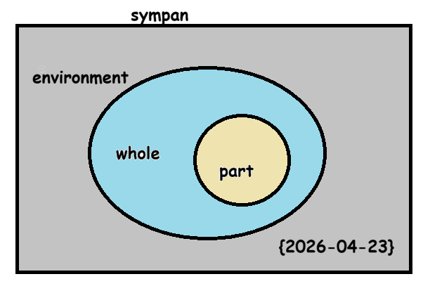
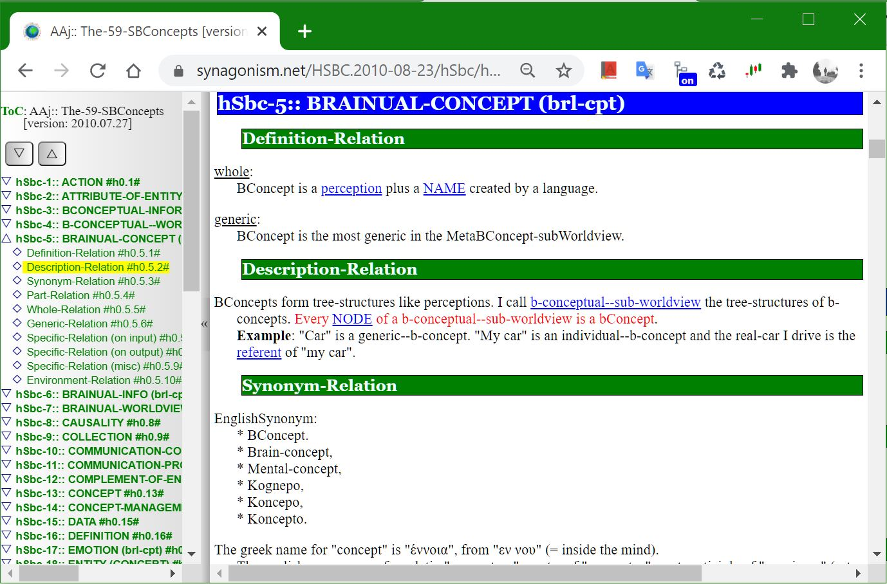
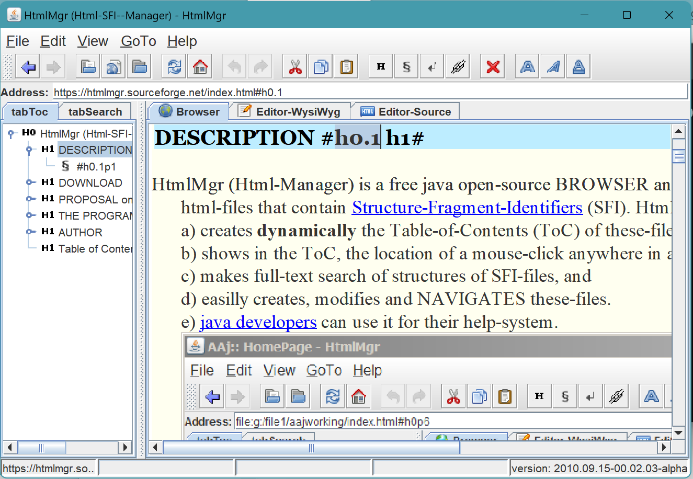
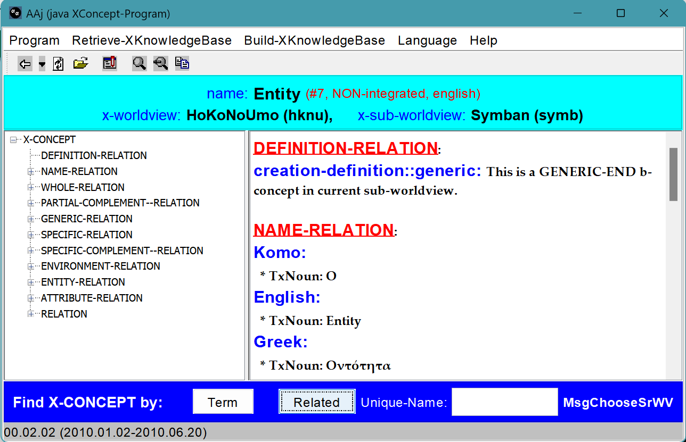
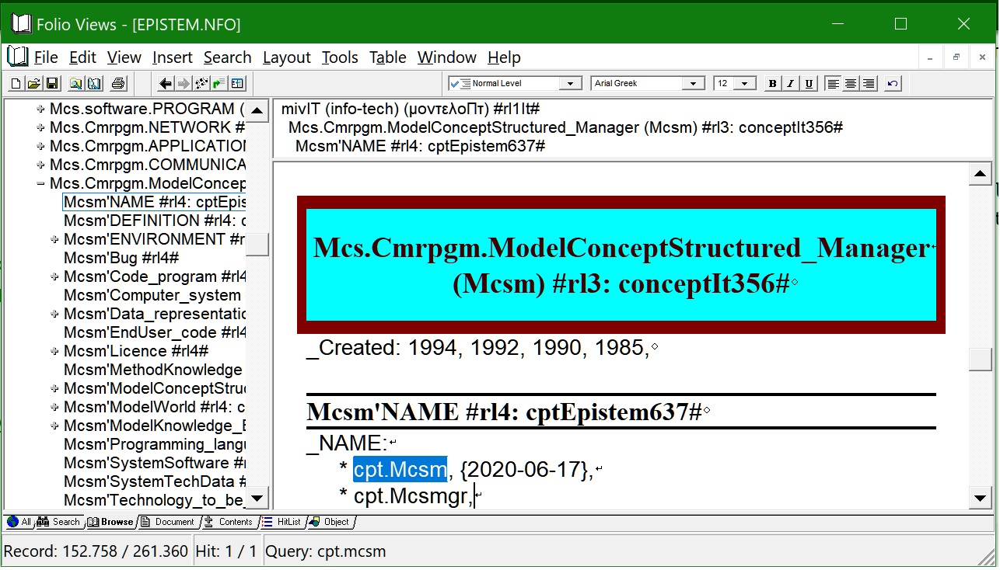
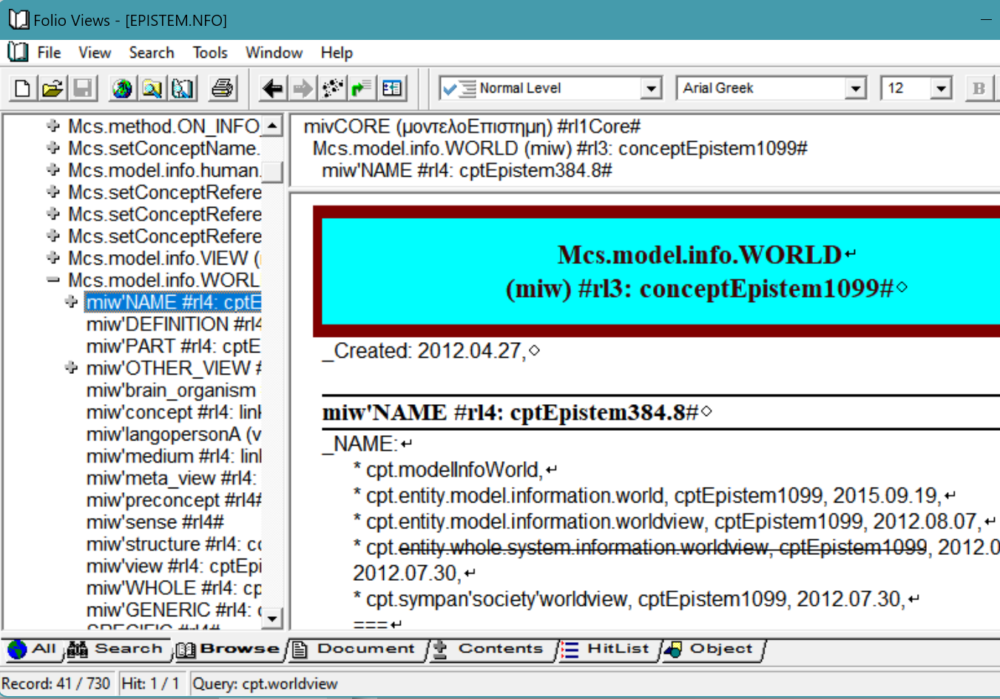

overview of Mcs
description::
· senso-concept (modelConceptSensorial | Mcs) is a-MODEL of a-mind-concept\a\ OUTSIDE of a-human-brain comprised of:
1) a-title: the-main-name of the-concept\a\ and
2) a list of attributes: which are the related concepts of the-concept\a\.
[hmnSngo.2019-12-12]
===
· structured-concept (modelConceptStructured | Mcs) is a-MODEL of a-human-concept\a\ OUTSIDE of a-human-brain comprised of:
1) a-title: the-main-name of the-concept\a\ and
2) a list of attributes: which are the related concepts of the-concept\a\.
[hmnSngo.2017-11-14]
===
· the-goal of structured-concept creation is the-creation of MONOSEMANTIC, consistent, and complete information, readable by humans AND machines.
[hmnSngo.2018-03-05]
name::
* McshEngl.senso-concept-(modelConceptSenso)!⇒Mcs,
* McshEngl.Mcs!=senso-concept-(modelConceptSenso),
* McshEngl.Mcs!~McsCor000002,
* McshEngl.McshCor000002.last.html//dirCor//dirMcsh!⇒Mcs,
* McshEngl.dirMcsh/dirCor/McshCor000002.last.html!⇒Mcs,
* McshEngl.Mcs.lagoElln!=αισθητή-έννοια!η,
* McshEngl.Mcs.lagoZhon!=感官概念-GǎnguānGàiniàn,
* McshEngl.Mws'04_sensorial-concept!⇒Mcs,
* McshEngl.Mws'sensorial-concept!⇒Mcs,
* SensoConcept!⇒Mcs, {2025-08-21}
* McshEngl.Scpt!⇒Mcs, {2021-03-26}
* McshEngl.concept.sensorial!⇒Mcs,
* McshEngl.conceptSenso!⇒Mcs,
* McshEngl.conceptSensorial!⇒Mcs,
* McshEngl.cptSenso!⇒Mcs,
* McshEngl.cptSns!⇒Mcs,
* McshEngl.cptSrl!⇒Mcs,
* McshEngl.modelConceptSenso!⇒Mcs, {2021-06-07}
* McshEngl.modelConceptSensorial!⇒Mcs, {2019-08-23}
* McshEngl.senso-concept!⇒Mcs, {2021-06-07}
* McshEngl.senso-concept-Mcs!⇒Mcs,
* McshEngl.senso-mind-concept!⇒Mcs,
* McshEngl.sensoconcept!⇒Mcs, {2021-06-05}
* McshEngl.sensorial-concept!⇒Mcs,
* McshEngl.sensorial--mind-concept!⇒Mcs,
* McshEngl.sensorial-mind-concept!⇒Mcs, {2020-05-09}
* McshEngl.structured-senso-concept!⇒Mcs, {2025-10-16}
====== lagoSinagu:
* McshSngu.Mes!=Mcs,
* McshSngu.eniuSensu!⇒Mes,
* enioSenso!⇒Mes,
* modelo-enio-senso!⇒Mes,
====== lagoChinese:
* McshZhon.GǎnguānGàiniàn-感官概念!=Mcs,
* McshZhon.GǎnguānGàiniàn-感官概念!=Mcs,
* McshZhon.感官概念-GǎnguānGàiniàn!=Mcs,
====== lagoGreek:
* McshElln.Μεα!=Mcs,
* McshElln.αισθητή-έννοια!⇒Μεα,
* McshElln.δομημένη-έννοια!⇒Μεα,
* McshElln.έννοια.αισθητή!⇒Μεα,
* McshElln.μοντέλο-δομημένης-έννοιας!⇒Μεα,
* McshElln.μοντέλοΕννοιαΑισθητή!⇒Μεα,
====== lagoTurkish:
* McshTurk.duyusal-kavram!=Mcs,
=== old-timely:
* McshEngl.model.002-sensorial-concept!⇒Mcs, {2020-08-04}
* McshEngl.model.sensorial-concept!⇒Mcs, {2020-08-04}
* McshEngl.material-brain-concept!⇒Mcs, {2012-04-27}
* McshEngl.modelConceptStructured!⇒Mcs, {2016-08-20}
* McshEngl.CBS!=ConceptBrainualSensorial,
* sensorial-concept!⇒Mcs, {2008-09-12}
* McshEngl.artificial-konsepto!⇒Mcs, {2006-01-29}
* McshEngl.structured-concept!⇒Mcs, {1995-04}
* McshEngl.koncesto!⇒Mcs,
===
* cptBrnSns,
* structured-information,
descriptionLong::
·
title of Mcs
description::
· title-of-Mcs is the-main-name-of-Mcs placed at the-top of its presentation.
"The-title is the-main-name of the-concept."
[hmnSngo.{2017-03-18}]
name::
* McshEngl.Mcs-attr.title,
* McshEngl.Mcs'part.title-of-Mcs,
* McshEngl.Mcs'title,
* McshEngl.Mcs-title!⇒nameMcsTitle,
* McshEngl.McsApTitle,
* McshEngl.nameMcs.title,
* McshEngl.nameMcsTitle!=Mcs-title,
* McshEngl.title--Mcs-attr,
* McshEngl.title-of-Mcs,
name of Mcs
description::
· name of Mcs\a\ is any logo-name of it\a\.
[hmnSngo.2019-08-05]
name::
* McshEngl.Mcs-attr.name!⇒nameMcs,
* McshEngl.Mcs-name!⇒nameMcs,
* McshEngl.Mcs'part.name!⇒nameMcs,
* McshEngl.Mcs'attAsName!⇒nameMcs,
* McshEngl.Mcs'attAsPartAsName!⇒nameMcs,
* McshEngl.Mcs'name!⇒nameMcs, {2020-04-30}
* McshEngl.nameMcs,
* McshEngl.name-att--of-Mcs!⇒nameMcs,
* McshEngl.name-of-Mcs!⇒nameMcs,
name-notation of nameMcs
description::
· it is VERY IMPORTANT to be-consistent on the-names we use in order to increase communication.
name::
* McshEngl.Mcs'notation-of-name!⇒name-notation,
* McshEngl.name'notation-of-Mcs!⇒name-notation,
* McshEngl.nameMcs'naming-convension!⇒name-notation,
* McshEngl.nameMcs-notation!⇒name-notation,
* McshEngl.nameMcs'notation!⇒name-notation,
* McshEngl.name-notation,
* McshEngl.name-notation--of-Mcs!⇒name-notation,
* McshEngl.naming-convension--of-Mcs!⇒name-notation,
* McshEngl.notation-of--Mcs-name!⇒name-notation,
name-notation.2-words-names
description::
· I use 2 words, at least, to name concepts.
· specifics: cellAnimal, cellBone, ...
· attributes: body'neck, body'torso, ...
· this method resolves ambiguities of one-word-names with many meanings and improves the-meaning of texts.
name::
* McshEngl.name-notation.2-words-names,
* McshEngl.2-words-names-notation,
* McshEngl.two-words-names-notation,
name-notation.no-space
description::
· no spaces in multi-word names:
* human-language, Mcs-attr,
* use char.45'-' or char.95'_' in programing-languages if '-' is not allowed,
* hyphenate compound-words when the-parts have obvious different concepts: structured-concept, keyboard,
* use more than one hyphen when combine compound-words: decentralized-crypto-chain--protocol,
[hmnSngo.2018-01-22]
name::
* McshEngl.name-notation.no-space,
name-notation.attribute
description::
· denote type of attributes of concepts:
* xxx'yyy or xxxAaYyy: yyy is attribute of xxx,
* xxx'yyy or xxxApYyy: yyy is part of xxx,
* xxx'yyy or xxxAeYyy: yyy is environment of xxx,
* xxx'yyy or xxxAwYyy: yyy is whole of xxx,
* xxx'yyy or xxxAgYyy: yyy is generic of xxx,
* xxx.yyy or xxxAsYyy or xxxYyy: yyy is specific of xxx,
[hmnSngo.2017-11-24, 2019-01-17]
===
* xxx'yyy or xxxAaYyy: yyy is attribute of xxx,
* xxx'pYyy or xxxApYyy: yyy is part of xxx,
* xxx'eYyy or xxxAeYyy: yyy is environment of xxx,
* xxx'wYyy or xxxAwYyy: yyy is whole of xxx,
* xxx'gYyy or xxxAgYyy: yyy is generic of xxx,
* xxx'sYyy or xxxAsYyy or xxxYyy: yyy is specific of xxx,
· this notation is very usefull when we SEARCH for a-concept, where we quickly find ALL related concepts.
· we can-use it in parallel with the-common-names of the-concepts.
name::
* McshEngl.'attribute--name-notation,
* McshEngl.name-notation.'attribute,
* McshEngl.name-notation.attribute('),
name-notation.attribute.part(/)
description::
· a-part-attribute of an-Mcs.
name::
* McshEngl./attribute.part--name-notation,
* McshEngl.name-notation./attribute.part,
* McshEngl.name-notation.attribute.part(/),
* McshEngl.name-notation.part-attribute(/),
* McshEngl.name-notation.whole/part,
name-notation.attribute.whole(//)
description::
· a-whole-attribute of an-Mcs.
name::
* McshEngl.//attribute.whole--name-notation,
* McshEngl.name-notation.//attribute.whole,
* McshEngl.name-notation.attribute.whole(//),
* McshEngl.name-notation.whole-attribute(//),
* McshEngl.name-notation.part//whole,
name-notation.attribute.specific(.)
description::
· a-specific-attribute of an-Mcs.
name::
* McshEngl..attribute.specific--name-notation,
* McshEngl.name-notation..attribute.specific,
* McshEngl.name-notation.attribute.specific(.),
* McshEngl.name-notation.specific-attribute(.),
* McshEngl.name-notation.generic.specific,
name-notation.attribute.generic(:)
description::
· a-generic-attribute of an-Mcs.
name::
* McshEngl.:generic-attribute--name-notation,
* McshEngl.name-notation.:attribute.generic,
* McshEngl.name-notation.attribute.generic(:),
* McshEngl.name-notation.generic-attribute(:),
* McshEngl.name-notation.specific:generic,
name-notation.attribute.parent-child
description::
· parent - child notation.
name::
* McshEngl.;child-attribute--name-notation,
* McshEngl.name-notation.;attribute.child,
* McshEngl.name-notation.attribute.child(;),
* McshEngl.name-notation.child-attribute(;),
* McshEngl.;;parent-attribute--name-notation,
* McshEngl.name-notation.;;attribute.parent,
* McshEngl.name-notation.parent;child,
* McshEngl.name-notation.child;;parent,
name-notation.capital
description::
· capital-inside ⇒ specific-concept:
- McsHitp, lagoSinagu,
· first-capital ⇒ initialism, many-words, instance:
- Mcsmgr, Mcs_mgr, Hitp, Athens, Sysnode, sys_node,
[humnSngu.{2026-08-27}]
· Webapi = many words name, first capital.
· lagoSinago = generic-specific name, first small.
[{2024-11-14} hmnSngo]
· first capital:
* initialisms: Hitp, Html,
* many-words: Webapi,
* instance-concepts: Earth, Athens,
* exception: short-names: net, ogn, ogm,
[hmnSngo.2018-01-22]
name::
* McshEngl.name-notation.capital,
name-notation.upper|lower-case
description::
· ONE CASE everywhere:
· sentences begin with char.183'·', so we do-not-need capital-letters in the-beginning of a-sentence.
· exceptions:
* all capitals, for emphasis,
* specifics: xxxYyy,
[hmnSngo.2018-01-14]
name::
* McshEngl.name-notation.lower|upper-case,
* McshEngl.name-notation.upper|lower-case,
name-notation.! extra-info
description::
- McsEll.σύστημα!το,
- McsEll.καλός!-ός-ή-ό,
· method of inflection:
name::
* McshEngl.! extra-info--name-notation,
* McshEngl.name-notation.! extra-info,
* McshEngl.name-notation.extra-info.!,
name-notation.!~ PoS
description::
- McshElln.ένας!~adjeElln,
name::
* McshEngl.!~ PoS--name-notation,
* McshEngl.name-notation.!~ PoS,
* McshEngl.name-notation.PoS !~,
name-notation.!⇒ main-name
description::
· denotes the-main-name\a\ of a-sensorial-concept.
· AND instructs the-computer to search for it\a\.
name::
* McshEngl.!⇒main-name--name-notation,
* McshEngl.main-name--name-notation-(!⇒),
* McshEngl.name-notation.!⇒main-name,
* McshEngl.name-notation.main-name.!⇒,
name-notation.!= translation
description::
· denotes translation to English.
name::
* McshEngl.!=translation--name-notation,
* McshEngl.name-notation.!= translation,
* McshEngl.name-notation.translation.!=,
name-notation.@ other-worldview
description::
· @ denotes a-name of another worldview.
· !/ previous
· we know / denotes part-of in directories.
· !: previous abandoned because : is-used in name-value-pair.
· !⇨ previous
name::
* McshEngl.@other-worldview--name-notation,
* McshEngl.other-worldview@--name-notation,
* McshEngl.name-notation.@other-worldview,
* McshEngl.name-notation.other-worldview@,
name-notation.{time} (link)
name-notation.[info-resource]
description::
· the-info-resource of an-info.
name::
* McshEngl.name-notation.[info-resource],
* McshEngl.name-notation.left-right-square-brackets,
name-notation.\reference\
description::
· the-reference of a-pronoun.
name::
* McshEngl.name-notation.\reference\,
* McshEngl.name-notation.reverse-solidus,
name-notation.fixed-length
description::
· when a-name has a-length smaller than a-fixed length I want to use,
then, then I add 0000s at the-end to match the-fixed length.
[hmnSngo.{2021-01-05}]
name::
* McshEngl.name-notation.fixed-length,
name-notation.before.2017-11-21
name::
* McshEngl.name-notation.before.2017-11-21,
description::
· NAMES are the-semantic-units of THE-SENTENCES of our texts/speeches.
We create names using WORDS.
In-order-to distinguish names from words I am-using the-following NAME-NOTATION.
Also, in our computer-era, where computers create automatically name-indexes, the-following-notation puts together related concepts.
NAME-OF-CONCEPT with MANY WORDS::
• xxx-yyy
• xxx_yyy
• xxxyyy
example: human-language, human_language, humanlanguage.
This composite-name itself, does not convey any meaning from its sub-names.
Name of A-SPECIFIC-CONCEPT::
• xxx.yyy: the-specifc has as generic the-xxx with attribute the-yyy.
• xxxYyy: same.
example: language.human, languageHuman, Kaseluris.Nikos.1959.
Name of A-CONCEPT'S-ATTRIBUTE::
• xxx's-yyy: yyy is an-attribute of xxx.
• xxx'yyy: same.
example: human's-language, human'language (= language-of-human).
Name of A-PROCESS-CONCEPT::
If a-concept is a-process, I use to name it with an '-ing' ending.
example: doing, evoluting, encrypting, ...
{2013-08-28}
APHORISM::
bad-names bad-thinking, clear-names clear-thinking.
{2013-02-22}
derived-name of nameMcs
description::
· derived-name\b\ of nameMcs\a\ is a-name of an-attribute of the-concept with the-nameMcs\a\, that is-created from it\a\.
· according to Mcs-naming-convension it\b\ begins with the-nameMcs\a\ which is-called 'original-name'.
name::
* McshEngl.derived-name--of--Mcs-name,
* McshEngl.nameMcs'derived-name,
* McshEngl.related-name--of--Mcs-name,
specific::
* derived--main-name,
original-name of nameMcs
description::
· original-name--of--a-nameMcs\a\ is a-name\b\ of a-concept with attribute the-nameMcs\a\, if name\b\ is a-derived-name of name\a\.
name::
* McshEngl.nameMcs'original-name,
* McshEngl.original-name--of--a-nameMcs,
nameMcs.SPECIFIC
description::
× Mcsh-creation: {2026-04-27}
* mind-name,
* mindNo-name,
* main-name,
* title,
===
* English-name,
* EnglishNo-name,
===
* machine-name,
* machineNo-name,
name::
* McshEngl.nameMcs.specific,
* McshEngl.Mcs'attAsNameAsSpecific,
nameMcs.attribute
description::
* English-language:
- concept'attribute. /kónsepts-átribyyut/ {2020-04-30}
- attribute-of-concept.
- conceptual-attribute.
===
* Sinago-language:
- eniosAtro.
- enios-atro.
name::
* McshEngl.nameMcs.attribute,
* McshEngl.attribute-name-of-Mcs,
nameMcs.specific-attribute
description::
* English-language:
- concept.specific.
- conceptSpecific.
- specific-concept.
- specific-of-concept.
===
* Sinago-language:
- enio-specifico.
- enioSpecifico.
name::
* McshEngl.nameMcs.specific-attribute,
* McshEngl.specific-attribute-name-of-Mcs,
nameMcs.mind
description::
· mind-name of Mcs\a\ is a-name we use to refer to concept\a\ itself and not to one of its semu-concepts.
· its generic noun usually it is-used as mind-name.
[hmnSngo.2019-08-05]
name::
* McshEngl.Mcs'dezignator!⇒nameMcsMind,
* McshEngl.dezignatorMcs!⇒nameMcsMind,
* McshEngl.dezignator-of-Mcs!⇒nameMcsMind,
* McshEngl.mind-name-of-Mcs!⇒nameMcsMind,
* McshEngl.mindNameMcs!⇒nameMcsMind, {2022-08-17}
* McshEngl.nameMcsMind,
* McshEngl.nameMcs.mind!⇒nameMcsMind,
* McshEngl.nameMindMcs!⇒nameMcsMind,
====== lagoGreek:
* McshElln.δηλωτής!ο!=nameMcsMind,
specific::
* ID,
* main-name,
* title,
nameMcsMind.main
description::
· a-Mcs can-have many mind-names.
· main-name is its most used term mind-name.
· the related names of the-concept (part, specific) are created from the-main-name.
name::
* McshEngl.nameMcsMind.main!⇒nameMcsMain,
* McshEngl.Mcs'attAsNameAsMain!⇒nameMcsMain,
* McshEngl.Mcs'main-name!⇒nameMcsMain,
* McshEngl.Mcs-main-name!⇒nameMcsMain, {2019-03-10}
* McshEngl.main-nameMcs!⇒nameMcsMain,
* McshEngl.main-name--of-Mcs!⇒nameMcsMain,
* McshEngl.nameMcsMain,
* McshEngl.nameMcs.main!⇒nameMcsMain,
derived-name of main-name
description::
· derived-name--of--Mcs-main-name\a\ is a-derived-name of it\a\
name::
* McshEngl.derived-name--of--Mcs-main-name,
* McshEngl.nameMcs.main'derived-name,
* McshEngl.nameMcsMain'derived-name,
* McshEngl.related-name--of--Mcs-main-name,
nameMcsMind.mainNo
description::
· mainNo-mind-name of Mcs is any mind-name other than the-main-name.
· the-mainNo-mind-names, in the-list of names, present and the-main-name in the-form: * Mcs.mainNo-name!⇒main-name,
· this way the-derived-names of a-name\a\ are-stored once with only the-main-name of the-name\a\.
name::
* McshEngl.mainNo-mind-name--Mcs-name,
* McshEngl.nameMcsMind.mainNo,
nameMcsMind.synonyms
description::
· synonyms of Mcs\a\ is the-set of all mind-names of Mcs\a\
name::
* McshEngl.nameMcsMind.synonyms,
nameMcsMind.conceptary
description::
· conceptary of worldview is the-set of all mind-names in one language.
· the-conceptary does-not-contain the-parts-of-speech that denote semu-concepts of a-concept.
name::
* McshEngl.dezigneptary-of-worldview, from 'dictionary'
* McshEngl.conceptary-of-worldview, from 'dictionary'
====== lagoGreek:
* McshElln.εννοιολόγιο!=conceptary, από 'λεξιλόγιο',
* McshElln.δηλοτολόγιο!=conceptary, από 'λεξιλόγιο',
environment::
* wordary,
* namary,
nameMcs.mindNo
description::
· mindNo-name of Mcs\a\ is a-name not a-mind-name, ie a-name for the-semu-concepts of a-concept, such as noun (case-noun, adjective, adverb), verb, conjunction.
[hmnSngo.2019-08-05]
name::
* McshEngl.Mcs'dezignatorNo,
* McshEngl.Mcs'mindNo-name,
* McshEngl.Mcs'semu-name,
* McshEngl.dezignatorNo-of-Mcs,
* McshEngl.mindNo-name-of-Mcs,
* McshEngl.nameMcsMindNo,
* McshEngl.nameMcsSemo!⇒nameMcsMindNo,
* McshEngl.semu-name--of-Mcs!⇒nameMcsMindNo,
====== lagoGreek:
* McshElln.μη-δηλωτής!=nameMcsMindNo,
nameMcs.main
description::
× Mcsh-creation: {2026-07-02}
* main--formal-mind-name,
* main--formalNo-mind-name,
* main--argo-name,
* main--verb-name,
* main--conj-name,
name::
* McshEngl.Mcs-main-name!⇒nameMcsMain,
* McshEngl.main-name--of-Mcs,
* McshEngl.nameMcs.main,
* McshEngl.nameMcsMain!=Mcs-main-name, {2026-07-02}
nameMcs.mainNo
description::
× Mcsh-creation: {2026-07-02}
· not a-main-name.
name::
* McshEngl.Mcs-mainNo-name!⇒nameMcsMainNo,
* McshEngl.mainNo-name--of-Mcs,
* McshEngl.nameMcs.mainNo,
* McshEngl.nameMcsMainNo!=Mcs-mainNo-name, {2026-07-02}
nameMcs.individual
description::
· genericNo-name of Mcs is ANY genericNo-logo-name of it.
name::
* McshEngl.Mcs-synonym!⇒nameMcsSyno,
* McshEngl.nameMcs.element,
* McshEngl.nameMcs.genericNo,
* McshEngl.nameMcs.individual,
* McshEngl.nameMcs.instance,
* McshEngl.nameMcs-element,
* McshEngl.nameMcs-instance,
* McshEngl.nameMcsSyno!=Mcs-synonym, {2026-07-02}
* McshEngl.genericNo-name--of-Mcs,
* McshEngl.name-element--of-Mcs,
* McshEngl.name-instance--Mcs-attr,
* McshEngl.synonym-of-Mcs,
* nameMcs, {2019-03-02}
* nameMcs, {2019-02-11}
nameMcs.English
description::
· a-English-nameMcs has:
* title: 'name::' and
* list-elements: '* McshEngl.name' (old: '* Mcs.name')
name::
* McshEngl.English--Mcs-name,
* McshEngl.nameMcs.English,
nameMcs.EnglishNo
description::
· a-non-English-nameMcs has:
* title: 'name::' and
* a-subtitle: '====== langoName:' and
* list-elements: '* McsLag4.name', where Lag4 a-4-letter language-name,
=== old:
* title: 'name.Language::' and
* list-elements: '* McsLag.name', where Lag is the-3-letter-terminology-ISO-639-2-language-code,
name::
* McshEngl.nameMcs.EnglishNo,
* McshEngl.non-English--Mcs-name,
====== lagoGreek:
* McshElln.μη-Αγγλικό-όνομα-αισθητής-έννοιας,
nameMcs.formal
description::
· formal--Mcs-name is an-Mcs-name used most by machines.
· for example, "nameMcsFrml".
· 1) formal-names are ONE word, short, at least locally unique.
· 2) initializations have only first capital: "Html, Dbcnet".
name::
* McshEngl.formal--Mcs-name,
* McshEngl.machine--Mcs-name,
* McshEngl.nameMcs.formal,
* McshEngl.nameMcs.machine,
* McshEngl.nameMcsFrml,
* McshEngl.Mcs'attAsNameAsFormal,
* McshEngl.Mcs'attAsNameAsMachine,
* McshEngl.Mcs'formal-name,
nameMcs.formalNo
description::
· formalNo--Mcs-name is an-Mcs-name used most by humans.
· for example, "non-formal-nameMcs".
name::
* McshEngl.formalNo--Mcs-name,
* McshEngl.informal--Mcs-name,
* McshEngl.machineNo--Mcs-name,
* McshEngl.nameMcs.formalNo,
* McshEngl.nameMcs.machineNo,
* McshEngl.nameMcsFrmlNo,
* McshEngl.Mcs'attAsNameAsFormalNo,
* McshEngl.Mcs'attAsNameAsMachineNo,
* McshEngl.Mcs'informal-name,
nameMcs.dictionary
description::
· in literature there-is a-confusion and different understandings among the-concepts:
* wordary,
* namary,
* termary,
* conceptary,
· that is why we see indexes of words instead of names.
· also we see vicious-circle-definitions of nouns and verbs of the-SAME concept.
name::
* McshEngl.dictionary@literature,
* McshEngl.glossary@literature,
* McshEngl.lexicon@literature,
* McshEngl.terminology@literature,
* McshEngl.vocabulary@literature,
attribute of Mcs
description::
· attribute-of-Mcs\a\ is one or more Mcs\b\ related with Mcs\a\.
[hmnSngo.2019-03-10]
name::
* McshEngl.Mcs'attribute!⇒Mcs-attr,
* McshEngl.Mcs'att!⇒Mcs-attr,
* McshEngl.Mcs'characteristic!⇒Mcs-attr,
* McshEngl.Mcs'trait!⇒Mcs-attr,
* McshEngl.Mcs-attr,
* McshEngl.McsAaAttribute!⇒Mcs-attr,
* McshEngl.attribute-of-Mcs!⇒Mcs-attr,
* McshEngl.characteristic-of-Mcs!⇒Mcs-attr,
* McshEngl.feature-of-Mcs!⇒Mcs-attr,
* McshEngl.value/!RDF!⇒Mcs-attr,
====== lagoSinagu:
* atro-a-Mes!=attribute-of-Mcs, {2019-10-20}
* enioSensosAtro, {2019-10-24}
====== lagoGreek:
* McshElln.χαρακτηριστικό-Μεα!=attribute-of-Mcs,
attribute-relation of Mcs
description::
· attribute-relation is the-relation between a-concept\a\ and an-attribute of it\a\.
=== implied yǒu-有!~verbZhon!=rltnMcs_then_attribute:
· _sntxZhon: 我 头疼。 :: _sntxSubj:[Wǒ] _sntxSbjc:[tóuténg]. != I have a headache.
· _sntxZhon: 我 就 一 个 哥哥 。 :: _sntxSubj:[Wǒ] _sntxIndividuality:[jiù] _sntxSbjc:[yī gè gēge]. != I only have one brother.
name::
* McshEngl.Mcs'attribute-relation,
* McshEngl.Mcs-attr'attribute-relation,
* McshEngl.attribute-relation--of-Mcs,
* McshEngl.relation.attribute-of-Mcs,
* McshEngl.being-rltnMcs_then_attribute,
* McshEngl.having-rltnMcs_then_attribute,
* McshEngl.rltnMcs_then_attribute,
* McshEngl.rltnAttribute-of-Mcs!⇒rltnMcs_then_attribute,
* McshEngl.of!~conjEngl!=rltnMcs_then_attribute,
* McshEngl.property@RDF!⇒Mcs'attribute-relation,
* McshEngl.verb.be!=rltnMcs_then_attribute!~verbEnglC,
* McshEngl.verb.have!=rltnMcs_then_attribute!~verbEnglC,
====== lagoSinagu:
* rao-atro!=rltnMcs_then_attribute,
* a!~conjSngu!=rltnMcs_then_attribute,
====== lagoChinese:
* McshZhon.dòngcí.yǒu-有!=rltnMcs_then_attribute,
* McshZhon.yǒu-有!~verbZhon!=rltnMcs_then_attribute,
* McshZhon.有-yǒu!~verbZhon!=rltnMcs_then_attribute,
====== lagoGreek:
* McshElln.σχέση-χαρακτηριστικού-Μεα,
attribute.SPECIFIC
description::
× Mcsh-creation: {2026-04-27}
=== alphabetically:
* author-att,
* complement-of-att,
* definition-att,
* description-att,
* dichotomous-division--att,
* division-att,
* doing-att,
* doingNo-att,
* environment-att,
* evaluation-att,
* evoluting-att,
* generic-att,
* generic-chain--att,
* inherited-from-att,
* inherited-fromNo-att,
* inherited-to-att,
* inherited-toNo-att,
* name-att,
* part-att,
* partNo-att,
* part-division--att,
* specific-att,
* specific-chain--att,
* specifics-division--att,
* supporter-att,
* title-att,
* whole-att,
* whole-chain--att,
* wholeNo-att,
name::
* McshEngl.attribute.specific,
attribute.specs-div.internal|external
description::
* part-att,
* partNo-att,
name::
* McshEngl.Mcs-attr.spec-div.part-instance,
attribute.specs-div.doing-instance
description::
· on doing:
* doing-att,
* doingNo-att,
name::
* McshEngl.Mcs-attr.spec-div.doing-instance,
attribute.specs-div.inherited-to
description::
· this division has NO meaning, because ALL att of a-generic inherited to a-specific.
· the-specific is the-one that has EXTRA att.
[hmnSngo.2020-01-11]
===
· on inherited-to:
* inherited-to-att,
* inherited-toNo-att,
name::
* McshEngl.Mcs-attr.spec-div.inherited-to-instance,
attribute.division
description::
· division--of--Mcs-attributes\a\-(part, partNo, specific, all-attributes) is the-SET of attributes of the-Mcs that make-up the-attributes\a\ divided on ONE attribute.
· there-are no overlappings and no holes in the-attributes of the-division.
· the-attributes of one-concept can-have many divisions.
name::
* McshEngl.Mcs-attr.division!⇒Mcs-division,
* McshEngl.Mcs'attAsDivision!⇒Mcs-division,
* McshEngl.Mcs'division-attribute!⇒Mcs-division,
* McshEngl.Mcs-division,
* McshEngl.division--of--Mcs-atts!⇒Mcs-division,
complement-of-att of Mcs-division
description::
· in ONE division all the-other attributes of an-attribute\a\ is the-complement of attribute\a\ ON this division.
name::
* McshEngl.Mcs-attr'complement!⇒Mcs-complement,
* McshEngl.Mcs'complement-of-att!⇒Mcs-complement,
* McshEngl.Mcs-attr.complement-of-att!⇒Mcs-complement,
* McshEngl.Mcs-complement,
* McshEngl.complement!⇒Mcs-complement,
* McshEngl.complement-of--Mcs-attr!⇒Mcs-complement,
====== lagoSinagu:
* uo!=complement-of-att,
====== lagoGreek:
* McshElln.επίθετο.συμπληρωματικός!=Mcs-complement,
* McshElln.συμπληρωματικός!~adjeElln!=Mcs-complement,
====== lagoTurkish:
* McshTurk.tamamlayıcı!=Mcs-complement,
======
"Of course! The term "complement" in mathematics (like the complement of a set or an angle) has interesting translations across languages, often rooted in the same Latin idea but adapted to each language's structure.
Here is a breakdown of "complement" in various world languages, focusing on the mathematical context.
### **Romance Languages**
These languages derive their terms directly from Latin ***complēmentum*** ("that which fills up").
* **Spanish:** el complemento
* *El complemento del conjunto A.* (The complement of set A.)
* **French:** le complément
* *Le complément d'un angle de 30° est 60°.*
* **Italian:** il complemento
* **Portuguese:** o complemento
* **Romanian:** complementul
### **Germanic Languages**
* **German:** das Komplement (formal, for sets, angles)
* *Das Komplement der Menge.*
* **Note:** In probability/statistics, *das Gegenereignis* ("counter-event") is often used for the complement of an event.
* **Dutch:** het complement
* **Swedish:** komplementet
* **Danish/Norwegian:** komplementet
### **Slavic Languages**
* **Russian:** дополнение (*dopolneniye*)
* *Дополнение множества.* (*Dopolneniye mnozhestva.*)
* Literally means "addition, supplement."
* **Polish:** dopełnienie
* **Czech:** doplněk
* **Serbo-Croatian:** komplement / комплемент, but also допуна / *dopuna*
### **Asian Languages**
* **Japanese:** 補集合 (*ho-shūgō*) for "complement of a set."
* 補 (*ho*) means "supplement." 集合 (*shūgō*) means "set."
* For angles: 余角 (*yo-kaku*) for "complementary angle."
* **Chinese (Mandarin):** 补集 (*bǔ jí*) for "complement set."
* 补 (*bǔ*) means "mend, repair, supplement." 集 (*jí*) means "set."
* Complementary angles: 余角 (*yú jiǎo*).
* **Korean:** 여집합 (*yeo-jiphap*) for "complement set."
* 여 (*yeo*) from 餘 meaning "remaining." 집합 (*jiphap*) means "set."
* **Hindi:** पूरक (*pūrak*)
* Derived from Sanskrit, meaning "that which fills" or "makes complete." Used for sets and angles.
* **Arabic:** المُتْـمَّة (*al-mutimma*)
* For sets: مكمل المجموعة (*mukammal al-majmū'a*).
### **Uralic & Other Languages**
* **Finnish:** komplementti (used in mathematics), but also **täydennys** ("the act of completing").
* **Hungarian:** komplementer (in set theory).
### **Key Linguistic Insight: Angles vs. Sets**
Many languages use **different words** for complementary angles vs. the complement of a set, even though the mathematical concept is the same.
* **English:** Complementary (angles) vs. Complement (of a set).
* **Japanese:** 余角 (*yokaku*) vs. 補集合 (*hoshūgō*).
* **Chinese:** 余角 (*yú jiǎo*) vs. 补集 (*bǔ jí*).
* **French:** Angles *complémentaires* vs. *complément* d'un ensemble.
### **Etymology**
The English word comes via Old French from Latin **complēmentum**, from **complēre** "to fill up, complete." This core meaning of "that which completes" is visible in almost all the translations above.
### **Summary Table**
| Language | Term (Mathematical Complement) | Key Notes |
| **Latin** | complēmentum | The source for many languages. |
| **Spanish** | el complemento | Direct inheritance. |
| **French** | le complément | Direct inheritance. |
| **German** | das Komplement | Formal math term; *Gegenereignis* in probability. |
| **Russian** | дополнение (dopolneniye) | Literally "addition/supplement." |
| **Arabic** | المُتْـمَّة (al-mutimma) | For angles; مكمل (mukammal) for sets. |
| **Mandarin** | 补集 (bǔ jí) | For sets. 余角 (yú jiǎo) for angles. |
| **Japanese** | 補集合 (ho-shūgō) | For sets. 余角 (yo-kaku) for angles. |
| **Hindi** | पूरक (pūrak) | Used for both sets and angles. |
This demonstrates how a fundamental mathematical concept is expressed through the unique lexical and semantic systems of languages worldwide."
[{2025-12-16 retrieved} https://chat.deepseek.com/a/chat/s/256283a7-7544-421a-95fe-d71336fbffa2]
Mcs-complement.SPECIFIC in division
description::
* attributes-complement,
* parts-complement,
* specifics-complement,
name::
* McshEngl.Mcs-complement.specific,
Mcs-complement.attributes in division
description::
· attributes-complement of Mcs-attr is a-complement that makes-up all the-attributes of the-Mcs.
name::
* McshEngl.Mcs-complement.attributes,
* McshEngl.attributes-complement--of-Mcs,
* McshEngl.complement.attributes--of-Mcs,
====== lagoSinagu:
* uatro-a-Mes!=complement.attributes,
* uo-atro-a-Mes!=complement.attributes,
Mcs-complement.parts in division
description::
· parts-complement of att\a\ in a-division is the-complement-of-att\a\ in a-part-division.
name::
* McshEngl.Mcs'parts-complement--of-att,
* McshEngl.Mcs-complement.parts,
* McshEngl.Mcs'parts-complement,
* McshEngl.complement.parts--of-Mcs,
* McshEngl.partial-complement,
* McshEngl.parts-complement--of-Mcs,
====== lagoSinagu:
* ujo-a-Mes!=complement.parts,
* uo-jo-a-Mes!=complement.parts,
Mcs-complement.specifics in division
description::
· specific-complement-of-att\a\ IN a-specifics-division-of-a-Mcs\b\ is the-complement-of-att\a\ in the-specifics-division\b\.
· example:
· the-sysMolecules has a-specifics-division: pure, pureNo.
· the-specific-complement-of-pure is the-pureNo.
name::
* McshEngl.Mcs'specifics-complement--of-att,
* McshEngl.Mcs-complement.specifics,
* McshEngl.Mcs-specifics-complement,
* McshEngl.complement.specifics--of-Mcs,
* McshEngl.specific-complement--of-Mcs,
* McshEngl.specifics-complement--of-Mcs,
====== lagoSinagu:
* ugo-a-Mes!=complement.specifics,
* uo-go-a-Mes!=complement.specifics,
Mcs-division.dichotomous
description::
· dichotomous-division is a-division with 2 members, the-one that has the-attribute and the-other that has not.
· it is the-simplest and clearest one.
name::
* McshEngl.Mcs-attr.dichotomous-division,
* McshEngl.Mcs-attr.division.dichotomous,
* McshEngl.Mcs'attAsDichotomous-division,
* McshEngl.Mcs'dichotomous-division-attribute,
* McshEngl.Mcs-division.dichotomous,
* McshEngl.dichotomous-division--Mcs-attr,
* McshEngl.division.dichotomous--Mcs-attr,
====== lagoGreek:
* McshElln.διχοτομική-διαίρεση!=dichotomous-division--Mcs-attr,
Mcs-division.trichotomous
description::
· like a-dichotomous-division we have clear division in 3 entities:
· past, present, future,
· male, maleNo-(female), maleBo-(both male and female).
[hmnSngo.2019-07-19]
name::
* McshEngl.Mcs-division.trihotomous,
* McshEngl.trihotomous-division--of-Mcs,
====== lagoGreek:
* McshElln.τριχοτομική-διαίρεση!=trichotomous-division--Mcs-attr,
specific::
* ordered--trichotomous-division,
* orderedNo-trichotomous-division,
first-att of ordered--trichotomous-division
description::
· first-attr
name::
* McshEngl.trichotomous-division'first-attribute,
====== lagoSinagu:
* atro-mido-anto,
middle-att of ordered--trichotomous-division
description::
· middle-attr
name::
* McshEngl.middle-att--of--trichotomous-division,
* McshEngl.trichotomous-division'middle-attribute,
====== lagoSinagu:
* atro-mido,
third-att of ordered--trichotomous-division
description::
· third-attr
name::
* McshEngl.trichotomous-division'third-attribute,
====== lagoSinagu:
* atro-mido-afto,
Mcs-division.attributes
description::
· attributes-division of Mcs\a\ is a-division of its\a\ attributes.
name::
* McshEngl.attributes-division-of-Mcs,
Mcs-division.doing
description::
· doing-division--Mcs-attr is a-dichotomous-division of a-Mcs's attributes in doing and doingNo.
name::
* McshEngl.division.doing--Mcs-attr,
* McshEngl.Mcs-attr.division.doing,
* McshEngl.Mcs-division.doing,
Mcs-division.part-attributes
description::
· parts-division--Mcs-attr is a-division of a-Mcs's parts.
name::
* McshEngl.Mcs-division.parts,
* McshEngl.Mcs-attr.division.parts,
attribute.part (internal)
description::
· part-att of Mcs\a\ is an-att we perceive as internal|intrinsic.
name::
* McshEngl.externalNo--Mcs-attr!⇒Mcs'part,
* McshEngl.internal--Mcs-attr!⇒Mcs'part,
* McshEngl.intrinsic--Mcs-attr!⇒Mcs'part,
* McshEngl.Mcs'externalNo-attribute!⇒Mcs'part,
* McshEngl.Mcs'internal-attribute!⇒Mcs'part,
* McshEngl.Mcs'attAsExternalNo!⇒Mcs'part,
* McshEngl.Mcs'attAsInternal!⇒Mcs'part,
* McshEngl.Mcs'attAsPart!⇒Mcs'part,
* McshEngl.Mcs'part,
* McshEngl.Mcs-attr.externalNo!⇒Mcs'part,
* McshEngl.Mcs-attr.internal!⇒Mcs'part,
* McshEngl.Mcs-attr.part!⇒Mcs'part,
* McshEngl.Mcs-part-att!⇒Mcs'part, {2019-04-08}
* McshEngl.part--Mcs-attr!⇒Mcs'part,
====== lagoSinagu:
* atro-jo-a-Mes!=Mcs'part,
part-relation
description::
· part-relation of Mcs\a\ is the-relation between the-Mcs\a\ and a-part of it\a\.
name::
* McshEngl.Mcs'part-relation,
* McshEngl.part-relation--of-Mcs,
* McshEngl.relation.part--of-Mcs,
* McshEngl.rltnMcs_then_part,
* McshEngl.rltnPart!⇒rltnMcs_then_part,
====== lagoSinagu:
* ja!~conjSngu!=rltnMcs_then_part,
* rao-jo!=rltnPart, {2023-07-21}
part.SPECIFIC
description::
* part-list--part-att,
* part-instance--part-att,
* title--part-att,
* overview--part-att,
* description--part-att,
* name--part-att,
* definition--part-att,
* part-division--part-att,
name::
* McshEngl.Mcs'part.specific,
part.list
description::
· part-list-att of Mcs is a-set of part-att.
name::
* McshEngl.Mcs'part.list,
* McshEngl.part-list-att--of-Mcs,
part.instance
description::
· part-instance--Mcs\a\-att is a-genericNo part-attribute.
name::
* McshEngl.Mcs-attr.part-instance,
* McshEngl.Mcs'part.instance,
* McshEngl.part-instance--Mcs-attr,
part.overview
description::
· overview-of-Mcs is a-part-attribute which contains the-description and the-name attributes.
[hmnSngo.2018-11-03]
name::
* McshEngl.OVERVIEW-of-Mcs,
* McshEngl.Mcs'part.overview,
* McshEngl.Mcs-attr.overview,
* McshEngl.overview-of-Mcs,
part.description
description::
· description--Mcs-attr is Mcs-TEXT that IDENTIFIES a-Mcs.
· a-definition UNIQUELY IDENTIFIES a-Mcs.
[hmnSngo.2017-12-22]
name::
* McshEngl.description--Mcs-attr,
* McshEngl.Mcs-attr.description,
* McshEngl.Mcs'part.description,
* McshEngl.Mcs'attAsDescription,
* McshEngl.Mcs'description-attribute,
part.definition
description::
· our knowledge is-structured in 3 fundamental structures: the-whole-part-tree and the-generic-specific-tree and the-evolutionary-tree.
· every Mcs must-have 6 definitions: generic, specific, whole, part, parent, child.
[hmnSngo.{2023-04-12}]
===
· definition-att of Mcs is Mcs-TEXT that UNIQUELY IDENTIFY a-Mcs in the shortest way.
· a-Mcs has more than one definition because our knowledge is-structured at least in two fundamental structures: the-whole-part-tree and the-generic-specific-tree.
· every Mcs must-have 4 definitions: generic, specific, whole, part.
· description is TEXT that IDENTIFY a-Mcs.
· a-definition is formal if it is readable and by machines.
name::
* McshEngl.Mcs-attr.definition!⇒definitionMcs,
* McshEngl.Mcs'part.definition!⇒definitionMcs,
* McshEngl.Mcs'attAsDefinition!⇒definitionMcs,
* McshEngl.definitionMcs,
* McshEngl.definition--Mcs-attr!⇒definitionMcs,
* McshEngl.definition-att-of-Mcs!⇒definitionMcs,
* McshEngl.definition-of-Mcs!⇒definitionMcs,
* McshEngl.dfn-of-Mcs!⇒definitionMcs,
====== lagoChinese:
* McshZhon.dìngyì-定义-(定義)!=definitionMcs,
* McshZhon.定义-(定義)-dìngyì!=definitionMcs,
====== lagoGreek:
* McshElln.ορισμός!ο!=definitionMcs,
======
"Here is **“definition” grouped by etymology**, showing whether each term comes from **Latin/Greek scholarly tradition** or from **native lexical roots**.
---
## 1️⃣ Latin *definīre* → “to set bounds, delimit”
Spread mainly through **Romance languages** and later adopted by many others via academia.
* **English:** *definition*
* **French:** *définition*
* **Spanish:** *definición*
* **German:** *Definition*
➡️ These are **direct borrowings** (or near-borrowings) from Latin, often via French or scholarly usage.
---
## 2️⃣ Greek roots (native, not borrowed from Latin)
Greek does **not** use the Latin-derived word.
* **Greek:** *ορισμός* (*orismós*)
* from *ὁρίζω* = “to set a boundary, determine”
➡️ Interestingly, Greek expresses the **same core metaphor** (setting limits) but with **native Greek morphology**.
---
## 3️⃣ Semitic root “to make known / clarify”
Derived from roots meaning **explanation or clarification**, not boundary-setting.
* **Arabic:** *تعريف* (*taʿrīf*) ← root ع-ر-ف (“to know, recognize”)
* **Hebrew:** *הגדרה* (*hagdará*) ← root ג-ד-ר (“to fence, enclose”)
➡️ Note:
* Arabic emphasizes **making something known**
* Hebrew emphasizes **enclosing / bounding**, closer to Latin–Greek metaphor
---
## 4️⃣ Sino-Xenic (Classical Chinese scholarly compound)
Used across East Asia, originally from **Classical Chinese**.
* **Chinese:** 定义 (*dìngyì*) = “fix + meaning”
* **Japanese:** 定義 (*teigi*)
* **Korean:** 정의 (*jeong-ui*)
➡️ All three share the **same characters and concept**, adapted phonetically.
---
## 5️⃣ Native Finno-Ugric formations
Built from **indigenous verbs**, not borrowed.
* **Finnish:** *määritelmä* ← “to determine/specify”
* **Hungarian:** *meghatározás* ← “to delimit, set bounds”
➡️ Semantically close to Latin/Greek, but **independently formed**.
---
## 6️⃣ Turkic native root
Plain, everyday verb → noun.
* **Turkish:** *tanım* ← *tanımak* (“to recognize, identify”)
➡️ Focuses on **recognition**, not boundaries.
---
## 7️⃣ Dravidian native formation
Descriptive, non-borrowed structure.
* **Tamil:** *வரையறை* (*varaiyaṟai*)
* *varai* = boundary/limit
* *aṟai* = statement
➡️ Conceptually very close to **Greek and Latin**, but fully native.
---
## 🧠 Big Picture Insight
Across languages, **“definition” tends to mean one of three things**:
1. **Setting boundaries** → Latin, Greek, Hebrew, Tamil
2. **Making meaning fixed/explicit** → Chinese-based terms
3. **Making something known/recognized** → Arabic, Turkish
If you want, I can:
* map these metaphors visually
* compare **legal vs mathematical definitions** across cultures
* or analyze how this affects **legal drafting and interpretation** (useful given your interest in legal English)."
[{2025-12-20 retrieved} https://chatgpt.com/c/6946491d-b95c-8330-9378-2a56ccff6b79]
definitionMcs.generic
description::
· generic-definition is a-definition FROM a-specific-concept.
· creates a-generic-concept.
name::
* McshEngl.definitionMcs.generic,
* McshEngl.generic-definitionMcs,
definitionMcs.specific
description::
· specific-definition is a-definition FROM a-generic-concept.
· creates a-specific-concept.
name::
* McshEngl.definitionMcs.specific,
* McshEngl.specific-definitionMcs,
definitionMcs.whole
description::
· whole-definition is a-definition FROM part-concepts.
· creates a-whole-concept.
name::
* McshEngl.definitionMcs.whole,
* McshEngl.whole-definitionMcs,
definitionMcs.part
description::
· part-definition is a-definition FROM a-whole-concept.
· creates a-part-concept.
name::
* McshEngl.definitionMcs.part,
* McshEngl.part-definitionMcs,
definitionMcs.parent
description::
· creates a-parent-concept in the-evolutionary-tree.
name::
* McshEngl.definitionMcs.parent,
* McshEngl.parent-definitionMcs,
definitionMcs.child
description::
· creates a-child-concept in the-evolutionary-tree.
name::
* McshEngl.child-definitionMcs,
* McshEngl.definitionMcs.child,
definitionMcs.analytic
description::
· analytic-definition is any specific or part definition.
name::
* McshEngl.analytic-definition,
* McshEngl.definitionMcs.analytic,
definitionMcs.synthetic
description::
· synthetic-definition is any generic or whole definitions.
name::
* McshEngl.definitionMcs.synthetic,
* McshEngl.synthetic-definitionMcs,
part.part-division
description::
· part-division--Mcs-attr is a-division of the-part-attributes.
name::
* McshEngl.division.part--Mcs-attr,
* McshEngl.Mcs'division.part,
* McshEngl.Mcs'part.part-division,
* McshEngl.Mcs-attr.part-division,
* McshEngl.Mcs'attAsPartial-division,
* McshEngl.part-division--Mcs-attr,
* McshEngl.partial-division--Mcs-attr,
attribute.partNo
description::

· partNo--Mcs-attr is the-complement of part-attribute.
name::
* McshEngl.Mcs'attAsExternal!⇒Mcs'partNo,
* McshEngl.Mcs'attAsInternalNo!⇒Mcs'partNo,
* McshEngl.Mcs'attAsPartNo!⇒Mcs'partNo,
* McshEngl.Mcs'external-attribute!⇒Mcs'partNo,
* McshEngl.Mcs'internalNo-attribute!⇒Mcs'partNo,
* McshEngl.Mcs-attr.external!⇒Mcs'partNo,
* McshEngl.Mcs-attr.internalNo!⇒Mcs'partNo,
* McshEngl.Mcs-attr.partNo!⇒Mcs'partNo,
* McshEngl.Mcs'partNo, {2020-08-30}
* McshEngl.external--Mcs-attr!⇒Mcs'partNo,
* McshEngl.extrinsic--Mcs-attr!⇒Mcs'partNo,
* McshEngl.intrinsicNo--Mcs-attr!⇒Mcs'partNo,
* McshEngl.partNo--Mcs-attr!⇒Mcs'partNo,
* environment--Mcs-attr!⇒Mcs'partNo, {2019-03-09}
====== lagoSinagu:
* atro-joUgo-a-Mes!=partNo-att--of-Mcs,
attribute.whole-part--tree (link)
attribute.whole
description::
· whole-att of Mcs\a\ is another Mcs\b\ which has as part the-Mcs\a\.
name::
* McshEngl.Mcs-attr.partNo.whole!⇒Mcs-whole,
* McshEngl.Mcs-attr.whole!⇒Mcs-whole,
* McshEngl.Mcs'attAsWhole!⇒Mcs-whole,
* McshEngl.whole--Mcs-attr, {2019-03-09}
* McshEngl.whole-of-Mcs,
====== lagoSinagu:
* atro-co-a-Mes!=whole-att--of-Mcs,
attribute.whole-chain
description::
· whole-chain of Mcs\a\ is the-chain of whole-concepts of Mcs\a\ from parent-whole to most-whole-concept.
name::
* McshEngl.Mcs-attr.whole-chain,
* McshEngl.Mcs'attAsWhole-chain,
* McshEngl.whole-chain--Mcs-attr,
attribute.wholeNo
description::
· wholeNo = environment. {2026-04-23}
· wholeNo--Mcs-attr is a-partNo-att which is not whole of this Mcs.
· a-wholeNo, partNo attribute.
name::
* McshEngl.Mcs'attAsWholeNo!⇒Mcs'envt,
* McshEngl.Mcs'envt,
* McshEngl.Mcs-attr.wholeNo!⇒Mcs'envt,
* McshEngl.environment--Mcs-attr!⇒Mcs'envt,
* Mcs-attr.partNo.wholeNo!⇒Mcs'envt,
* partNo.wholeNo--Mcs-attr!⇒Mcs'envt,
* wholeNo.partNo--Mcs-attr!⇒Mcs'envt,
====== lagoSinagu:
* atro-coUgo-a-Mes!=!⇒Mcs'envt,
attribute.wholeNo.SPECIFIC
description::
× Mcsh-creation: {2026-04-27}
* author-of-Mcs,
* evaluation-of-Mcs,
* referent-of-Mcs,
* supporter-of-Mcs,
name::
* McshEngl.attribute.wholeNo.specific,
attribute.wholeNo.archetype
description::
· a-concept is a-brainin-model of entities\a\.
· a-structured-concept is a-computer-model of a-concept.
· archetype-of-a-structured-concept is the-set of entities\a\.
[hmnSngo.2018-01-07]
===
· referent-of-Mcs is the-entity that the-Mcs models.
· every concept models an-entity (its referent).
· the-referent of a-concept\a\ and the-referent of the-Mcs that models that concept\a\ are the-same.
name::
* McshEngl.Mcs'archetype,
* McshEngl.Mcs-attr.archetype,
* McshEngl.Mcs-attr.referent,
* McshEngl.Mcs'attAsArchetype,
* McshEngl.Mcs'referent,
* McshEngl.archetype--Mcs-attr,
* McshEngl.referent--Mcs-attr,
whole-chain::
* environment--Mcs-attr,
generic-tree::
* Mcs-attr,
attribute.wholeNo.evaluation
description::
· evaluation--Mcs-attr is the-cons and pros of the-Mcs.
name::
* McshEngl.evaluation--Mcs-attr,
* McshEngl.Mcs-attr.evaluation,
* McshEngl.Mcs-attr.wholeNo.evaluation,
attribute.wholeNo.supporter
description::
· supporter-of-Mcs is the-entity (human, group of humans, machine) that consider this Mcs as true.
name::
* McshEngl.Mcs-attr.holder,
* McshEngl.Mcs-attr.supporter,
* McshEngl.Mcs'supporter,
* McshEngl.supporter-of-Mcs,
attribute.author
description::
· author is the-supporter who created the-Mcs.
name::
* McshEngl.author-of-Mcs,
* McshEngl.Mcs'author,
* McshEngl.Mcs'creator,
attribute.doing
description::
· doing--Mcs-attr is LISTS of a-Mcs-attr which are doings|processes.
name::
* McshEngl.doing--Mcs-attr,
* McshEngl.Mcs-attr.doing,
attribute.evoluting
description::
· evoluting--Mcs-attr is the-attribute that describes the-Mcs over time, its stages.
· evoluting comprises the-evoluting of the-Mcs itself and the-evoluting of its referent.
· everything is-born and die.
· evoluting is a-doing-attribute, not a-specific one because specifics behave like the-evolution of their generic.
name::
* McshEngl.evoluting--Mcs-attr,
* McshEngl.Mcs-attr.evoluting,
* McshEngl.Mcs-attr.specific.evoluting,
attribute.doingNo
description::
· doingNo--Mcs-attr is the-complement doing-att.
name::
* McshEngl.doingNo--Mcs-attr,
* McshEngl.Mcs-attr.doingNo,
attribute.generic-specific--tree (link)
attribute.generic
description::
· generic-att of Mcs\a\ is another Mcs\b\ whose\b\ all attributes are and attributes of Mcs\a\ but not the-opposite.
· the-Mcs\a\ is a-specific-of-Mcs\b\.
· the-referent of a-generic-of-Mcs is a-superset of the-referent-of-Mcs.
name::
* McshEngl.generic-att--of-Mcs,
* McshEngl.generic-of-Mcs,
* McshEngl.Mcs-attr.generic,
* McshEngl.Mcs'attAsGeneric-attribute,
* McshEngl.Mcs'generic-attribute,
====== lagoSinagu:
* atro-ko-a-Mes!=generic-att--of-Mcs,
attribute.generic-chain
description::
· generic-chain of Mcs\a\ is the-chain of generic-concepts of Mcs\a\ from parent-generic to most-generic-concept.
name::
* McshEngl.generic-chain--Mcs-attr,
* McshEngl.Mcs-attr.generic-chain,
* McshEngl.Mcs'attAsGeneric-chain,
generic-tree::
* tree-node--path,
attribute.specific
description::
· specific-att of Mcs\a\ is another Mcs\b\ if all the-attributes of Mcs\a\ are and attributes of Mcs\b\ and not the-opposite.
· the-Mcs\a\ is a-generic-of-Mcs\b\.
· also, the-referent of a-specific is a-subset of the-referent of its generic.
name::
* McshEngl.Mcs-attr.specific,
* McshEngl.Mcs'attAsSpecific,
* McshEngl.specific--Mcs-attr,
* McshEngl.specific-att-of-Mcs,
* McshEngl.specific-of-Mcs,
====== lagoSinagu:
* atro-koUanto-a-Mes!=specific-att--of-Mcs,
attribute.individual
description::
· individual-att of Mcs is a-specific-of-Mcs which has no other specifics.
name::
* McshEngl.Mcs-attr.individual,
* McshEngl.individual-att--of-Mcs,
* McshEngl.individual-of-Mcs,
* McshEngl.instance-of-Mcs,
====== lagoSinagu:
* atro-koUgo-a-Mes!=individual-att--of-Mcs,
attribute.specifics-division
description::
Specifics-division-of-Mcs\a\ is the-set of specific-concepts of Mcs\a\ on THE-SAME-ATTRIBUTE.
A-generic-concept can-have MANY specifics-divisions on DIFFERENT attributes.
For example, humans on 'tallness' are tall and tallNo.
The same humans on 'fatness' are fat and fatNo.
But it is a-mistake to say that humans are tall, tallNo and fat.
And this is the most common mistake in scientific-knowledge!
[hmnSngo.2017-11-15]
name::
* McshEngl.Mcs-attr.division.specifics,
* McshEngl.Mcs-attr.specifics-division,
* McshEngl.Mcs-division.specifics,
* McshEngl.Mcs'attAsSpecifics-division,
* McshEngl.division.specifics--Mcs-attr,
* McshEngl.sd!=specifics-division--Mcs-attr, {2022-08-28}
* McshEngl.specific-division--Mcs-attr,
* McshEngl.specifics-division!=specs-div,
* McshEngl.specs-div!=specifics-division,
* McshEngl.specs-division--Mcs-attr,
====== lagoGreek:
* McshElln.διαίρεση-ειδικών-εννοιών,
generic-tree::
* generic-tree,
attribute.inherited-from
description::
Inheritedfrom--Mcs\a\-att is an-attribute-of-Mcs\a\ which is AND attribute of a-generic-concept of it\a\.
name::
* McshEngl.inherited-from--Mcs-attr,
* McshEngl.Mcs-attr.inherited-from,
* McshEngl.Mcs'attAsInherited-from,
* McshEngl.Mcs'inherited-from--attribute,
attribute.inherited-from.no
description::
InheritedfromNo--Mcs\a\-att is an-attribute-of-Mcs\a\ which is NOT AND attribute of a-generic-concept of it\a\.
name::
* McshEngl.inherited-fromNo--Mcs-attr,
* McshEngl.Mcs-attr.inherited-fromNo,
* McshEngl.Mcs-attr.own,
* McshEngl.Mcs'attAsInherited-fromNo,
attribute.inherited-to
description::
Inheritedto--Mcs\a\-att is an-attribute-of-Mcs\a\ which is AND attribute of a-specific-concept of it\a\.
name::
* McshEngl.inherited-to--Mcs-attr,
* McshEngl.Mcs-attr.inherited-to,
* McshEngl.Mcs'attAsInherited-to,
attribute.inherited-to.no
description::
InheritedtoNo--Mcs\a\-att is an-attribute-of-Mcs\a\ which is NOT AND attribute of a-specific-concept of it\a\.
name::
* McshEngl.inherited-toNo--Mcs-attr,
* McshEngl.Mcs-attr.inherited-toNo,
* McshEngl.Mcs'attAsInherited-toNo,
* McshEngl.Mcs'inherited-toNo--attribute,
text of Mcs
description::
· Mcs-text is TEXT comprised of nameMcs.
· it uses the-nameMcs-notation.
· the-goal of Mcs-text is to be MONOSEMANTIC by defining ALL the-names it uses, LIKE computer-language-texts.
[hmnSngo.2018-10-14]
===
· the-second goal is the-manager to understands the-text and display it in any language.
· monosemanticity is a-prerequisite for that.
· lagSinago could-be-used for that.
[hmnSngo.{2021-03-18}]
name::
* McshEngl.Mcs'text!⇒Mcs-text,
* McshEngl.Mcs-text, {2019-05-22}
* McshEngl.sensorial-concept--text!⇒Mcs-text,
* McshEngl.text-of-Mcs!⇒Mcs-text,
time of Mcs
description::
· time info is enclosed in {}.
=== time-point:
* {2005}
* {0005}
* {Bce0005}
* {Bce9999}
* {BpK1x010} ⭢ 10'000 years ago, after Bce9999 use only Bp,
* {BpK1x012} ⭢ 12'000 years ago,
* {BpK1x033} ⭢ 33'000 years ago,
* {BpK2x033} ⭢ 33 million years ago,
* {BpK3x033} ⭢ 33 billion years ago,
=== time-interval:
* {i2005..2010}
* {iBce0010..Bce0005}
* {iBpK1x033..BpK1x003}
* {i0...} ⭢ interval larger that millennium
* {i1m-2000} ⭢ interval-1m time-info: MILLENNIUM events {1001..2000}
* {i11-2000} ⭢ interval-11 time-info: early-millennium events,
* {i12-2000} ⭢ interval-12 time-info: middle-millennium events,
* {i13-2000} ⭢ interval-13 time-info: late-millennium events,
* {i1m-Bce2000} ⭢ interval-1m time-info: MILLENNIUM events {Bce1001..Bce2000}
* {i2c-2000} ⭢ interval-2c time-info: CENTURY {1901..2000}
* {i21-2000} ⭢ interval-21 time-info: early-century,
* {i3d-2000} ⭢ interval-3d time-info: DECADE {1991..2000}
* {i4y-2000} ⭢ interval-4y time-info: YEAR,
=== time-on-subject:
* {socEus-2000} ⭢ Eu time-info (uses main-name),
* {socEus-i2000..2060} ⭢ Eu time-info (uses main-name),
* {socEus-ic-2000} ⭢ Eu time-info (uses main-name),
===
name::
* McshEngl.Mcs'time,
* McshEngl.time.Mcs,
view of Mcs
description::
· Mcs-view is a-sensorial-concept-Mcs which is a-system of sensorial-concepts that we communicate.
---
· a-mind-view\a\ is a-brain construct that\a\ we do-not-know yet how exactly it is-formed.
· but we can-make a-sensorial model of it\a\, comprised of sensorial-concepts.
· in this site, these sensorial-concepts I am-using, I call sensorial-concepts-Mcs and the-sensorial mind-view, Mcs-view\b\.
· this\b\ sensorial view is the-input of language-mapping-method and anybody can-see.
· also this\b\ sensorial view is what anyone can-get if they decode correctly the-logo-view.
---
name::
* McshEngl.Mcs-view!⇒Mcsview, {2019-05-22}
* McshEngl.Mcsview!=Mcs-view,
* McshEngl.Mcs'view!⇒Mcsview,
* McshEngl.Mcs'conceptual-model!⇒Mcsview,
* McshEngl.McsAwView!⇒Mcsview,
* McshEngl.Mcsvw!⇒Mcsview, {2020-07-06}
* McshEngl.Mcsvw!=Mcs-view,
* McshEngl.Mcs-subworldview!⇒Mcsview,
* McshEngl.concept-model--of--sensorial-concepts!⇒Mcsview,
* McshEngl.conceptual-model--of--sensorial-concepts!⇒Mcsview,
* McshEngl.conceptual-model.sensorial!⇒Mcsview,
* McshEngl.conceptual-modelAsMcs!⇒Mcsview,
* McshEngl.conceptual-system-of-Mcs!⇒Mcsview,
* McshEngl.conceptual-system.sensorial!⇒Mcsview,
* McshEngl.infoViewMcs!⇒Mcsview,
* McshEngl.model.004-Mcs-view!⇒Mcsview, {2020-08-04}
* McshEngl.model.Mcs-view!⇒Mcsview, {2020-08-04}
* McshEngl.model-of-sensorial-concepts!⇒Mcsview,
* McshEngl.modelConceptView!⇒Mcsview,
* McshEngl.modelConceptViewMcs!⇒Mcsview,
* McshEngl.modelInfoView.Mcs!⇒Mcsview,
* McshEngl.sensoconcept-model!⇒Mcsview, {2021-06-05}
* McshEngl.sensorial--conceptual-model!⇒Mcsview,
* McshEngl.sensorial--conceptual-system!⇒Mcsview,
* McshEngl.sensorial-concept-model!⇒Mcsview,
* McshEngl.sensorial-conceptual-model!⇒Mcsview,
* McshEngl.sensorial-concept--view!⇒Mcsview, {2020-11-10}
* McshEngl.sensorial-concept-view!⇒Mcsview,
* McshEngl.sensorial-mind-view!⇒Mcsview,
* McshEngl.sensorial-view!⇒Mcsview, {2020-05-06}
* McshEngl.subworldview-of-Mcs!⇒Mcsview,
* McshEngl.system-of-conceptsSensorial!⇒Mcsview,
* McshEngl.viewBrnSnsHmn!⇒Mcsview,
* McshEngl.viewMcs!⇒Mcsview,
* McshEngl.viewMindSensorial!⇒Mcsview,
* McshEngl.viewSensorial!⇒Mcsview,
* McshEngl.view-of-Mcs!⇒Mcsview,
* sensorial-brain-concept-view!⇒Mcsview,
* sensorial-mind-view--of-lagHmnm!⇒Mcsview,
====== lagoGreek:
* McshElln.αισθητών-εννοιών--εννοιακό-μοντέλο!=Mcsview,
* McshElln.αισθητών-εννοιών--θεώρηση!=Mcsview,
* McshElln.εννοιακό-μοντέλο--αισθητών-εννοιών!=Mcsview,
* McshElln.θεώρηση--αισθητών-εννοιών!=Mcsview,
specific::
* directory-Mcs-view,
* world-Mcs-view,
* base-Mcs-view,
dir-view of Mcs
description::
· directory-Mcsview is a-Mcs-view that is-stored in a-computer-directory.
name::
* McshEngl.directory-view--of-Mcs!⇒Mcsdir,
* McshEngl.Mcsdir!=directory-view--of-Mcs,
* McshEngl.Mcs'dir-view!⇒Mcsdir,
* McshEngl.Mcs-dir-view!⇒Mcsdir,
* McshEngl.Mcsdv!⇒Mcsdir, {2020-06-17}
* McshEngl.directory-Mcsview!⇒Mcsdir,
* McshEngl.viewDirMcs!⇒Mcsdir,
====== lagoGreek:
* McshElln.φάκελος--αισθητών-εννοιών!=Mcsdv,
world-view of Mcs
description::
· Mcs-worldview is a-Mcs-view of an-entity (human, group-of-humans, organization-of-humans) with ALL their Mcs-views.
· an-Mcs-worldview is a-Mcs.
· an-Mcs-worldview is MONOSEMOUS, because the-Mcs-text it uses is monosemous.
· an-Mcs-worldview is SUBJECTIVE, it describes the-view about the-world of the-entity that supports it.
name::
* McshEngl.worldview-of-Mcs!⇒Mcswv,
* McshEngl.Mcswv!=worldview-of-Mcs,
* McshEngl.Mcs.worldview!⇒Mcswv,
* McshEngl.Mcs'worldview!⇒Mcswv,
* McshEngl.Mcs-worldview!⇒Mcswv, {2019-05-22}
* McshEngl.McsAsWorldview!⇒Mcswv,
* McshEngl.McsViewAsWorldview!⇒Mcswv,
* McshEngl.Mcsworldview!⇒Mcswv,
* McshEngl.McsWorld!⇒Mcswv, {2019-03-01}
* McshEngl.Mcsw!⇒Mcswv,
* McshEngl.modelConceptWorld!⇒Mcswv,
* McshEngl.modelConceptWorldMcs!⇒Mcswv,
* McshEngl.modelInfoWorldMcs!⇒Mcswv,
* McshEngl.sensorial-concept--pedia!⇒Mcswv,
* McshEngl.sensorial-concept--worldview!⇒Mcswv,
* McshEngl.sensorial-mind-worldview!⇒Mcswv,
* McshEngl.viewWorldMcs!⇒Mcswv,
* McshEngl.world-view.Mcs!⇒Mcswv,
* McshEngl.worldviewAsMcs!⇒Mcswv,
* McshEngl.worldviewMcs!⇒Mcswv,
* McshEngl.worldviewMindSensorial!⇒Mcswv,
* McshEngl.worldviewSensorialMind!⇒Mcswv,
====== lagoGreek:
* McshElln.αισθητών-εννοιών--κοσμοθεώρηση!=Mcswv,
* McshElln.κοσμοθεώρηση--αισθητών-εννοιών!=Mcswv,
generic-tree-of-Mcswv::
* worldviewSensorial,
* worldviewPrimary,
* Mcsview,
* Mcs,
human of Mcswv
description::
· the-human|s that endorse this worlview.
name::
* McshEngl.Mcswv'human,
dirMcsh of Mcswv
description::
· every Mcs-worldview is-stored in a-site in a root-directory, the-'dirMcsh'.
name::
* McshEngl.Mcs'dirMiwMcs,
* McshEngl.Mcswv'dirMcsh, {2020-06-17}
* McshEngl.Mcswv'dirMiwMcs,
* McshEngl.dirMcsh,
base-view of Mcs
description::
· Mcs-base-view is a-Mcs-view with a-set of Mcs-worldviews.
name::
* McshEngl.base-of-Mcs!⇒Mcsbase,
* McshEngl.Mcsbase!=base-of-Mcs,
* McshEngl.Mcs-base-view!⇒Mcsbase,
* McshEngl.Mcsbv!⇒Mcsbase, {2020-06-17}
* McshEngl.Mcsb!⇒Mcsbase, {2020-06-17}
* McshEngl.base-view-of-Mcs!⇒Mcsbase,
* McshEngl.base-view.Mcs!⇒Mcsbase,
* McshEngl.baseMcs!⇒Mcsbase,
* McshEngl.baseviewMcs!⇒Mcsbase,
* McshEngl.baseview.Mcs!⇒Mcsbase,
* McshEngl.sensorial-concept--base!⇒Mcsbase,
* McshEngl.viewBaseMcs!⇒Mcsbase,
* McshEngl.worldview-baseMcs!⇒Mcsbase,
====== lagoGreek:
* McshElln.βάση--αισθητών-κοσμοθεωρήσεων!=Mcsbase,
mind-relation of Mcs
description::
· the-relation between the-Mcs and the-mind-concept that models.
name::
* McshEngl.Mcs'mind-relation,
mind-concept of Mcs
description::
· an-Mcs models a-mind-concept using the-Mcs-language.
name::
* McshEngl.Mcs'mind-concept,
* McshEngl.mind-concept-of-Mcs,
semu-relation of Mcs
description::
· the-relation between the-Mcs and the-semu-concepts a-language creates from it.
name::
* McshEngl.Mcs'semu-relation,
logo-relation of Mcs
description::
· the-relation between the-Mcs and the-names a-language creates from it.
name::
* McshEngl.Mcs'logo-relation,
language of Mcs
description::
· the-language we use to map mind-concepts to Mcs.
name::
* McshEngl.Mcs'language!⇒lagMcsl,
* McshEngl.Mcs-language!⇒lagMcsl,
* McshEngl.lagMcsl,
* McshEngl.lagMcsl!=Mcs'language,
specific-tree-of-lagMcsl::
* lagHmcs,
* HtmlSfi,
* Xml,
manager of Mcs
description::
· Mcs-manager is the-tools, computers, computer-networks, computer-programs, info-storage-entities, etc we use to manage Mcs.
· Mcsmgr manages from inception, worldviews and more accurately baseviews.
name::
* McshEngl.Mcs-manager!⇒Mcsmgr,
* McshEngl.Mcsmgr!=Mcs-manager, {2020-11-12}
* McshEngl.Mcs'manager!⇒Mcsmgr,
* McshEngl.Mcs-mngr!⇒Mcsmgr,
* McshEngl.Mcs-worldview-manager!⇒Mcsmgr,
* McshEngl.Mcs-tool!⇒Mcsmgr,
* McshEngl.Mcsm!⇒Mcsmgr, {2020-06-17}
* McshEngl.Mcsmanager!⇒Mcsmgr,
* McsMgr!=Mcs-manager, {2025-08-08}
* McshEngl.Mcsmngr!⇒Mcsmgr,
* McshEngl.Mcswv'manager!⇒Mcsmgr,
* McshEngl.Mcswvm!⇒Mcsmgr,
* McshEngl.SCM!=sensorial-concept-manager,
* McshEngl.sensorial-concept-manager!⇒Mcsmgr, {2020-06-25}
* McshEngl.worldview-manager.Mcs!⇒Mcsmgr,
=== OLD:
* McshEngl.Mcs-pgm!⇒Mcsmgr, {2017-10-15} //emphais on mcs,
* McshEngl.structured-concept-manager!⇒Mcsmgr, {2016-08-23}
* McshEngl.programModelConceptStructured!⇒Mcsmgr, {2016-08-23}
* McshEngl.programMcs!⇒Mcsmgr, {2016-08-23}
* McshEngl.concept-processor!⇒Mcsmgr, {2016-03-12} //in contrast 'word-processor',
* McshEngl.cbsmgr!⇒Mcsmgr, {2013-07-31}
* McshEngl.cbscms!⇒Mcsmgr, {2013-04-04}
* McshEngl.cbs-cms!⇒Mcsmgr, {2013-04-03}
* McshEngl.cmsCbs!⇒Mcsmgr, {2013-04-03}
* McshEngl.cms.cbs!⇒Mcsmgr, {2013-04-03}
* McshEngl.cbs-management-system!⇒Mcsmgr, {2013-03-30}
* McshEngl.cbsms!⇒Mcsmgr, {2013-03-30}
* McshEngl.prgCbs!⇒Mcsmgr, {2012-03-27}
* McshEngl.cbsPrg!⇒Mcsmgr, {2012-03-18}
* McshEngl.sbcMgr!⇒Mcsmgr, {2011-05-28}
* McshEngl.ConceptBrainualSensorialManager!⇒Mcsmgr, {2011-05-27}
* McshEngl.cbsManager!⇒Mcsmgr, {2011-05-27}
* McshEngl.SBViewManager!⇒Mcsmgr, {2011-01-29}
* SciMgr!⇒Mcsmgr, {2011-01-28}
* McshEngl.koncesto-program!⇒Mcsmgr, {2008-01-19}
* McshEngl.SCprogram!⇒Mcsmgr, {2008-01-13}
* McshEngl.KNBprogram!⇒Mcsmgr, {2007-12-19}
* McshEngl.KNprogram!⇒Mcsmgr, {2007-12-18}
* McshEngl.brainepto-base-purification-program!⇒Mcsmgr, {2007-12-08}
* McshEngl.bbpp!⇒Mcsmgr, {2007-12-08}
* McshEngl.brainepto-base-program!⇒Mcsmgr, {2007-12-01}
* McshEngl.brainepto-base-manager!⇒Mcsmgr, {2007-11-27}
* McshEngl.brainepto-base-management!⇒Mcsmgr, {2007-11-26}
* McshEngl.knowledge-system-management!⇒Mcsmgr, {2007-11-25}
* McshEngl.integruolo!⇒Mcsmgr, {2007-07-30} //I want to emphasize its integration function and NOT just the management which is more generic,
* McshEngl.knowledge-integrator!⇒Mcsmgr, {2007-06-22}
* McshEngl.brainepto-model--integrator!⇒Mcsmgr, {2007-01-30}
* McshEngl.model-breinepto--management!⇒Mcsmgr, {2006-06-01}
* McshEngl.mdbm!⇒Mcsmgr, {2006-06-01}
* McshEngl.Conceptual-Model-Management-System!⇒Mcsmgr, {2001-07-30}
* McshEngl.Concept-Base-Management-System!⇒Mcsmgr, {2001-06-20}
* McshEngl.scs-science-support-system!⇒Mcsmgr, {1999-08-27}
* McshEngl.scs-sss!⇒Mcsmgr, {1999-08-27}
* McshEngl.SCS!=structured-concept-system,
* McshEngl.Knowledge-Management-System!⇒Mcsmgr, {1999-02-08}
* McshEngl.Structured-Concept-System-KMS!⇒Mcsmgr, {1997-11-09}
* McshEngl.scs-KMS!⇒Mcsmgr, {1997-11-09}
* McshEngl.scs-program!⇒Mcsmgr, {1997-11-09}
* McshEngl.scs-editor/browser!⇒Mcsmgr, {1997-10-05}
* McshEngl.structured-concept-system-creator-program!⇒Mcsmgr, {1997-05-09}
* McshEngl.scsc-program!⇒Mcsmgr, {1997-05-09}
* McshEngl.scs-creator!⇒Mcsmgr, {1997-05-06}
* McshEngl.scsc!⇒Mcsmgr, {1997-05-06}
* McshEngl.Science-Support-System!⇒Mcsmgr, {1990}
* McshEngl.SSS!=science-support-system,
===
* McshEngl.structured-concept--knowledge-management-system!⇒Mcsmgr,
* McshEngl.SBC-program-(sensorial-brain-concept-program)!⇒Mcsmgr,
* McshEngl.sensorial-brain-concept-program-(SBC-program)!⇒Mcsmgr,
====== lagoGreek:
* McshElln.ΔΟΜΗΜΕΝΩΝ-ΕΝΝΟΙΩΝ-ΣΥΣΤΗΜΑ-ΔΙΑΧΕΙΡΙΣΗΣ-ΓΝΩΣΗΣ, {1999-02-08}
* McshElln.ΠΡΟΓΡΑΜΑ-ΔΗΜΙΟΥΡΓΙΑΣ-ΣΥΣΤΗΜΑΤΩΝ-ΔΟΜΗΜΕΝΩΝ-ΕΝΝΟΙΩΝ,
* McshElln.ΣΥΣΤΗΜΑ-ΔΟΜΗΜΕΝΩΝ-ΕΝΝΟΙΩΝ,
===
* the-evolution of the-names for the-manager shows, in some degree, and the-evolution of the-concept.
info of Mcsmgr
description::
· the-info the-manager stores and retrieves.
· the-goal of Mcsmgr is the-construction of base-views (set of world-views) because information is subjective and there-is no absolute truth info.
· in contrast, today {2020} we see the-construction of only ONE worldview:
- https://www.wolframalpha.com/tour/: "expert-level knowledge",
- https://en.wikipedia.org/wiki/Help:Editing: "Ideally, all information should be cited and verifiable by reliable sources."
- https://www.cyc.com/archives/service/cyc-knowledge-base: "Cyc has the world’s broadest and deepest common sense knowledge base (KB), by orders of magnitude."
name::
* McshEngl.Knlgbase.Mcsmgr,
* McshEngl.Mcsmgr'info,
* McshEngl.Mcsmgr'att006-info,
user of Mcsmgr
description::
· user is any human or machine that uses the-system.
name::
* McshEngl.Mcsmgr'user,
* McshEngl.Mcsmgr'att013-user,
user.author of Mcsmgr
description::
· one or more humans that support a-worldview.
name::
* McshEngl.Mcsmgr'author,
* McshEngl.Mcsmgr'user.author,
user.reader of Mcsmgr
description::
· a-human that reads the-base.
name::
* McshEngl.Mcsmgr'reader,
* McshEngl.Mcsmgr'user.reader,
DOING of Mcsmgr
description::
× Mcsh-creation: {2026-04-27}
· the-functions of the-manager.
name::
* McshEngl.McsmDoing,
* McshEngl.Mcsmgr'doing!⇒McsmDoing,
doing.SPECIFIC
description::
* building-base,
* retrieving-base,
===
* building,
* computing,
* consistency-checking,
* formating,
* generic-specific-relations-management,
* inferencing,
* integrating,
* name-management,
* navigating,
* parent-child-relations-management,
* presenting,
* retrieving,
* questioning,
* storing,
* translating,
* validating,
* whole-part-relations-management,
name::
* McshEngl.McsmDoing.specific,
building-base of Mcsmgr
description::
· the-first function the-manager must-have is to be-able to build a-consistent base.
name::
* McshEngl.Mcsmgr'building-base,
* McshEngl.Mcsmgr'att001-building-base,
* McshEngl.McsmDoing.building-base,
* McshEngl.Mcsmgr'storing-base,
acquiring-base of Mcsmgr
description::
· the-method the-manager uses to gather info for its base.
· adding new concepts must-not-invalidate existing relations.
* directly by an-author.
* by collaboration.
* automatically from another machine.
* mechanical-learning techniques.
* natural-language-understanding.
* sensor support.
name::
* McshEngl.Mcsmgr'acquiring-base,
* McshEngl.Mcsmgr'att024-acquiring-base,
* McshEngl.McsmDoing.adding-concepts,
* McshEngl.McsmDoing.acquiring-base,
changing-info of Mcsmgr
description::
· changing relations must-be-validated.
· changing the-names of Mcs, the-base must-be the-same.
· the-evolution of the-base must-show the-changes.
name::
* McshEngl.Mcsmgr'att026-changing-info,
* McshEngl.Mcsmgr'changing-info,
* McshEngl.McsmDoing.changing-info,
formating of Mcsmgr
description::
· changing the-format of a-Mcs, to change this format in all other Mcs.
name::
* McshEngl.Mcsmgr'formating,
* McshEngl.Mcsmgr'att003-formating,
* McshEngl.McsmDoing.formating,
generic-specific-managing of Mcsmgr
description::
· this is THE-MOST IMPORTANT DOING the-manager MUST-HAVE.
· changing an-attribute in an-Mcs\a\, the-manager to make this change in all its\a\ specifics.
· generalizing attribute: make it and attribute of its generic.
name::
* McshEngl.Mcsmgr'generic-specific-managing,
* McshEngl.Mcsmgr'att004-generic-specific-managing,
* McshEngl.McsmDoing.generic-specific-managing,
validating.generic (link) of Mcsmgr
validating.specific (link) of Mcsmgr
validating.sibling (link) of Mcsmgr
whole-part-managing of Mcsmgr
description::
· whole-part-relations managing is the-second MOST IMPORTANT DOING the-manager MUST-HAVE.
name::
* McshEngl.Mcsmgr'whole-part-managing,
* McshEngl.Mcsmgr'att005-whole-part-managing,
* McshEngl.McsmDoing.whole-part-managing,
validating.part (link) of Mcsmgr
validating.whole (link) of Mcsmgr
validating of Mcsmgr
description::
· the-manager must validate the-relations among the-stored-concepts for incosistencies.
· on every editing the-system must validate the-new relations.
name::
* McshEngl.Mcsmgr'validating,
* McshEngl.Mcsmgr'att009-validating!⇒Mcsmgr'validating,
* McshEngl.Mcsmgr'consistency-checking!⇒Mcsmgr'validating,
* McshEngl.McsmDoing.validating!⇒Mcsmgr'validating,
* McshEngl.Mcsmgr'integrating!⇒Mcsmgr'validating,
validating.part of Mcsmgr
description::
· IF current-cpt has as PART cpt-x,
THEN cpt-x has as WHOLE current-cpt.
name::
* McshEngl.Mcsmgr'validating.part,
* McshEngl.Mcsmgr'att015-part-validating,
validating.whole of Mcsmgr
description::
· IF current-cpt has as WHOLE cpt-x,
THEN cpt-x has as PART current-cpt.
name::
* McshEngl.Mcsmgr'validating.whole,
* McshEngl.Mcsmgr'att016-whole-validating,
validating.generic of Mcsmgr
description::
· IF current-cpt has as GENERIC cpt-y
THEN the-ATTRIBUTES of cpt-y are attributes of current-cpt. {1999-01-17}.
===
· IF current-cpt has as GENERIC cpt-y
THEN cpt-y has as SPECIFIC current-cpt. {1999-02-28}.
name::
* McshEngl.Mcsmgr'validating.generic,
* McshEngl.Mcsmgr'att017-generic-validating,
validating.specific of Mcsmgr
description::
· IF current-cpt has as SPECIFIC cpt-y
THEN the-attributes of current-cpt are attributes of cpt-y. {1999-01-17}.
===
· IF current-cpt has as SPECIFIC cpt-y
THEN cpt-y has as GENERIC current-cpt. {1999-02-22}.
name::
* McshEngl.Mcsmgr'validating.specific,
* McshEngl.Mcsmgr'att018-specific-validating,
validating.sibling of Mcsmgr
description::
· IF current-cpt has as SIBLING cpt-y
THEN both concepts have a-common generic-concept. {1999-02-09}.
===
· IF current-cpt has as sibling cpt-y in relation to generic cpt-w
AND cpt-y has as sibling cpt-z in relation to generic cpt-w
THEN current-cpt has as sibling cpt-z. {1999-03-13}.
===
· IF current-cpt has as GENERIC cpt-y
THEN check if ALL the-specifics of cpt-y are siblings of current-cpt (except current!). {1999-04-17}.
name::
* McshEngl.Mcsmgr'validating.sibling,
* McshEngl.Mcsmgr'att019-sibling-validating,
validating.complement of Mcsmgr
description::
· the-elements of a-specific-division must-have its specific-complements.
===
· the-elements of a-part-division must-have its part-complements.
name::
* McshEngl.Mcsmgr'validating.complement,
* McshEngl.Mcsmgr'att020-complement-validating,
validating.definition of Mcsmgr
description::
· every concept must-have part, whole, generic, specific definitions.
name::
* McshEngl.Mcsmgr'validating.definition,
* McshEngl.Mcsmgr'att021-definition-validating,
validating.relation of Mcsmgr
description::
· IF current-cpt has a-relation with cpt-y
THEN cpt-y must-have this relation with current-cpt.
name::
* McshEngl.Mcsmgr'validating.relation,
* McshEngl.Mcsmgr'att022-relation-validating,
name-managing of Mcsmgr
description::
· the-manager must-support the-consistent|inconsistent name-managing-mechanisms of the-natural-languages of its base.
· names help us to communicate our info.
· bad-names, bad communication.
· the-manager must-have under control the-names used in its info.
* it must validate the-names against the-naming conventions used in its base-view.
* it must find undefined names.
* it must can-change a-name in all cases used.
* ...
name::
* McshEngl.Mcsmgr'name-managing,
* McshEngl.Mcsmgr'att010-name-managing,
* McshEngl.McsmDoing.name-managing,
retrieving-base of Mcsmgr
description::
· the-value of the-system depends on the-easiness of retrieving the-stored-base.
name::
* McshEngl.Mcsmgr'retrieving-base,
* McshEngl.Mcsmgr'att002-retrieving-base,
* McshEngl.McsmDoing.retrieving-base,
presenting of Mcsmgr
description::
· the-presentation of the-system's-info is very important for the-reader.
· Mcsmgr presents its info per concept ubiquitously.
name::
* McshEngl.Mcsmgr'presenting,
* McshEngl.Mcsmgr'att011-presenting,
* McshEngl.McsmDoing.presenting,
* McshEngl.Mcsmgr'reading,
navigating of Mcsmgr
description::
· the-manager must-have the-ability to navigate through its base.
· the-navigating must-be-easy and fast.
name::
* McshEngl.Mcsmgr'navigating,
* McshEngl.Mcsmgr'att012-navigating,
* McshEngl.McsmDoing.navigating,
translating of Mcsmgr
description::
· the-manager must be-able to compute the-translation of the-stored-info in all natural-languages and not just store the-translation.
name::
* McshEngl.Mcsmgr'translating,
* McshEngl.Mcsmgr'att007-translating,
* McshEngl.McsmDoing.translating,
questioning of Mcsmgr
description::
· the-system must answer questions on the-stored-info.
· it must be-able to compute answers and not just retrieve stored-info.
name::
* McshEngl.Mcsmgr'questioning,
* McshEngl.Mcsmgr'att008-questioning,
* McshEngl.McsmDoing.questioning,
computing of Mcsmgr
description::
· the-manager must-can-make many computations (building or retrieving) on its base.
name::
* McshEngl.Mcsmgr'computing,
* McshEngl.Mcsmgr'att014-computing,
* McshEngl.McsmDoing.computing,
* McshEngl.Mcsmgr'inferencing,
specific-tree-of-Mcsmgr'computing::
* name-managing,
* questioning,
* translating,
* validating,
evoluting-managing of Mcsmgr
description::
· the-manager must-have the-ability to store and present the-evolution of its base.
name::
* McshEngl.Mcsmgr'evoluting-managing,
* McshEngl.Mcsmgr'att023-evoluting-managing,
* McshEngl.McsmDoing.evoluting-managing,
evoluting of Mcsmgr
description::
· see Mcs'evoluting.
name::
* McshEngl.evoluting-of-Mcsmgr,
* McshEngl.Mcsmgr'evoluting,
GENERIC-SPECIFIC-TREE of Mcsmgr
description::
× Mcsh-creation: {2026-04-27}
· the-generic-specific-tree of the-manager.
name::
* McshEngl.Mcsmgr'generic-specific-tree,
GENERIC-TREE of Mcsmgr
description::
× Mcsh-creation: {2026-04-27}
* knowledge-manager,
* worldview-management-tool,
name::
* McshEngl.Mcsmgr'generic-tree,
attribute-tree-of-Mcsmgr::
* ,
att-tree-inherited-from::
· :
* ,
att-tree-own-of-Mcsmgr::
* ,
Mcsmgr.ideal
description::
· McsMgrIdeal\a\ is an-Mcsmgr we have to build in order to have better worldviews and consequently a-better society.
· it must-be a-decentralized-system like IPFS.
· it must-be like a-web-app, so any machine can-work with it.
· it must-support many worldviews.
· it must-support all natural-languages.
· it must-support the-evolution of the-world and the-evolution of the-worldviews.
· on Mcsmgr attributes, I will-present its\a\ attributes.
name::
* McshEngl.Mcsmgr.ideal!⇒McsMgrIdeal,
* McshEngl.Mcsmgr.long-term!⇒McsMgrIdeal,
* McshEngl.McsMgrIdeal, {2021-03-24}
* McshEngl.ideal-Mcsmgr!⇒McsMgrIdeal,
* McshEngl.long-term-Mcsmgr!⇒McsMgrIdeal,
* McshEngl.needed-Mcsmgr!⇒McsMgrIdeal,
Mcsmgr.Mcs-Visual{2026} (link)
Mcsmgr.Hitp-{2013} (link)
Mcsmgr.MediaWiki-{2011}
description::
· synagonism-mw is a-MediaWiki-Skin that greatly improves page-READING by moving the-table-of-contents on the-left and showing the-position the-reader is-reading.
· I created this skin because I was-thinking to use MedaWiki (wikipedia's manager) as an-Mcsmgr for Html-Mcs.
· I abandoned this idea because I did-not-want to use the-PHP-language.
name::
* McshEngl.Mcsmgr.MediaWiki!⇒McsMgrWiki,
* McshEngl.Mcsmgr.synagonism-mw!⇒McsMgrWiki,
* McshEngl.McsMgrWiki,
* McshEngl.synagonism-mw--Mcsmgr!⇒McsMgrWiki,
addressWpg::
* http://synagonism-mw.sourceforge.net/,
* https://sourceforge.net/projects/synagonism-mw/,
Mcsmgr.ToC-crx-{2010..today} (link)
description::

· with my ToC-Chrome-extension I could-have an-Html-Mcs\a\ without the-need of a-special program to view it\a\.
· but with a-cost. It\a\ was-depended on Chrome-browser and a-source-editor.
· old webpage on synagonism.net.
· on chrome web store: https://chrome.google.com/webstore/detail/table-of-contents-crx/eeknhipceeelbgdbcmchicoaoalfdnhi.
· on GitHub: https://github.com/synagonism/CrxToc.
name::
* McshEngl.table-of-contents-Crx--Mcsmgr!⇒McsmgrCrxToc,
* McshEngl.McsmgrCrxToc!=table-of-contents-Crx--Mcsmgr,
* McshEngl.Mcsmgr.CrxToc!⇒McsmgrCrxToc,
* McshEngl.table-of-contents-Chrome-extension--Mcsmgr!⇒McsmgrCrxToc,
* McshEngl.Toc-Chrome-extension--Mcsmgr!⇒McsmgrCrxToc,
* McshEngl.Toc-Crx--Mcsmgr!⇒McsmgrCrxToc,
* McshEngl.crxToc-Mcsmgr!⇒McsmgrCrxToc,
Mcs (link) of McsmgrCrxToc
Mcsmgr.HtmlMgr-{2010}
description::

· HtmlMgr is a-free java open-source BROWSER and a-wysiwyg and source EDITOR of html-files\a\ that contain structured-fragment-identifiers that denote the-structure of the-files\a\.
· quickly I stopped developing this project, when I realized that java is not the-appropriate language to manage html, BUT shows the-wysiwyg functionality needed.
· HtmlMgr was my first try to create a-senso-concept-Mcs in Html.
· I published it on SourceForge.
· the-last working version with AAj documentation, I published on GitHub.
· you can-download ("download raw file") the-whole directory from github, unzip it, and run it locally.
· you can also download it, here in synagonism.net.
name::
* McshEngl.HtmlMgr-Mcsmgr,
* McshEngl.Mcsmgr.HtmlMgr,
* McshEngl.Mcsmgr.Sfi,
* McshEngl.McsMgrSfi,
* McshEngl.app.HtmlMgr,
addressWpg::
* https://github.com/synagonism/appHtmlMgr: last working version with AAj documentation,
* https://htmlmgr.sourceforge.net/,
* https://lists.w3.org/Archives/Public/public-html-comments/2010May/0027.html,
Mcsmgr.AAj-{1997..2010}
description::

· AAj is my-java open-source Mcsmgr that uses Xml-Mcs.
· I worked on this project until {2010} when projects like wikipedia showed to me that a-worldview must be online.
· the-last working version 00.02.02-2010.06.20, with documentation viewable with my HtmlMgr, I published on GitHub.
· you can-download ("download raw file") the-whole directory from github, unzip it, and run it locally.
· you can also download it, here in synagonism.net.
name::
* McshEngl.AAj!⇒McsMgrAAj,
* McshEngl.AAj-Mcsmgr!⇒McsMgrAAj,
* McshEngl.AAj-SensorialConcept-ComputerSystem!⇒McsMgrAAj,
* McshEngl.AAj-SensorialConcept-System!⇒McsMgrAAj,
* McshEngl.AAj-Brainepto-Base-Purification-System!⇒McsMgrAAj,
* McshEngl.AAj-Knowledge-Integrator!⇒McsMgrAAj,
* McshEngl.KnlgMngr.003-AAj!⇒McsMgrAAj,
* McshEngl.KnlgMngr.AAj!⇒McsMgrAAj,
* McshEngl.Mcsmgr.AAj!⇒McsMgrAAj,
* McshEngl.McsMgrAAj, {2021-03-22}
* McshEngl.app.AAj!⇒McsMgrAAj,
* McshEngl.jSCS!⇒McsMgrAAj,
* McshEngl.java-Brainepto-Model-Manager!⇒McsMgrAAj,
* McshEngl.java-Mental-Model-Management!⇒McsMgrAAj,
* McshEngl.java-Structured-Concept-Knowledge-Management-System!⇒McsMgrAAj,
* McshEngl.java-Structured-Concept-System!⇒McsMgrAAj,
* McshEngl.java-Science-Support-System!⇒McsMgrAAj,
view of McsMgrAAj
description::
· view-of-McsMgrAAj is a-system of McsAAj on any-entity of one author.
· quantity of concepts:
* Human-Body 4 concepts
* InfoTech 113 concepts
* Language 142 concepts
* Philosophy 41 concepts
* Society 2 concepts
* Source 1 concept
* SUM 303 concepts
* [https://synagonism.net/otenet/jscs.html-{2000-06-19}]
name::
* McshEngl.McsMgrAAj'view,
* McshEngl.McsMgrAAj'subworldview,
worldview of McsMgrAAj
description::
· worldview-of-McsMgrAAj is the-system of McsAAj of ONE author.
name::
* McshEngl.McsMgrAAj'worldview,
base of McsMgrAAj
description::
· base-of-McsMgrAAj is the-set of its supported worldviews.
name::
* McshEngl.McsMgrAAj'base,
* McshEngl.McsMgrAAj'knowledge-base,
structure of McsMgrAAj
description::
* computer,
* program,
** viewer,
** editor,
** html-browser,
* base,
name::
* McshEngl.McsMgrAAj'structure,
viewer of McsMgrAAj
description::

· AAj-viewer
name::
* McshEngl.McsMgrAAj'viewer,
menu of McsMgrAAj'viewer
description::
* Program:
** About Program/Author,
** Exit,
* Retrieve-XKnowledgeBase:
** Back,
** History,
** Refresh,
** Information of Current XConcept,
** View All Tree-Structures,
** View Whole-Tree-Structure,
** View Part-Tree-Structure,
** View Generic-Tree-Structure,
** View Specific-Tree-Structure,
** View Specific-Complements,
** Find XConcept:
*** Find XConcept by Name,
*** Find XConcept by Related XConcepts,
*** Find XConcept by FormalID,
*** Find XConcept by Formal-Name,
*** Find Selected XConcept,
*** Open XConceptFile,
*** Find XConcept by Searching Xml-Files,
*** Find XConcept by FormalID/FormalName File-Lists,
** Find TxConcept-Terms of TxConcept-Name,
** Ask AAj a Question,
** Translate,
** XKnowledgeBase Statistics,
** XKnowledgeBase Author,
* Build-XKnowledgeBase:
** Integrate Current XConcept:
*** Total Integration,
*** Part Integration,
*** Whole Integration,
*** Generic Integration,
*** Specific Integration,
*** Environment Integration,
** Edit Source of XConcept,
** Manage Names,
** Update LgConcept-Terms,
** Override Selected Part,
** Generalize Selected Part,
** Make Part Inherited,
** Change SubWorldView,
** Add XConcept:
*** Add NEW XConcept to Current:
**** As PART,
**** As WHOLE,
**** As GENERIC,
**** As SPECIFIC,
**** As ENVIRONMENT,
**** As ATTRIBUTE,
*** Add EXISTING XConcept to Current:
*** Add UNRELATED XConcept,
** Delete XConcept:
*** Delete XConcept,
*** Delete Related XConcept:
**** Delete PART,
**** Delete WHOLE,
**** Delete GENERIC,
**** Delete SPECIFIC,
**** Delete DIMENSION,
**** Delete ENVIRONMENT,
*** Delete UNRELATED XConcept to Current
** Add Specific-Division ON Attribute,
** Manage Sinago-Terms,
** Create Sensorial-Worldview,
** Create Sensorial-SubWorldview,
** Set Author of XKnowledgeBase,
** Save Variables,
* Language:
** English Language,
** Greek Language,
** Esperanto Language,
** Sinago Language,
* Help:
** Help in Html,
** What is AAj,
** AAj Parts Tree,
** AAj Functions Tree,
name::
* McshEngl.McsMgrAAj'menu.viewer,
* McshEngl.McsMgrAAj'viewer'menu,
editor of McsMgrAAj
description::

· AAj-editor
name::
* McshEngl.McsMgrAAj'editor,
* McshEngl.McsMgrAAj'Xml-editor,
browser of McsMgrAAj
description::

· AAj-browser
name::
* McshEngl.McsMgrAAj'browser,
* McshEngl.McsMgrAAj'Html-browser,
DOING of McsMgrAAj
description::
· base-building,
· base-retrieving,
name::
* McshEngl.McsMgrAAj'doing,
generic-tree-of-AAj'doing::
* Mcsmanager-doing,
doing.retrieving-base of McsMgrAAj
description::
* accessing-base,
* navigating-base,
* presenting-base,
name::
* McshEngl.McsMgrAAj'doing.retrieving-base,
* McshEngl.McsMgrAAj'retrieving-base,
retrieving.accessing-base of McsMgrAAj
description::
· AAj is a-local-system the-user must store is its computer.
name::
* McshEngl.McsMgrAAj'accessing-base,
* McshEngl.McsMgrAAj'doing.accessing-base,
retrieving.navigating-base of McsMgrAAj
description::
* user-interface,
* finding|searching,
* asking|inferring,
name::
* McshEngl.McsMgrAAj'doing.navigating-base,
* McshEngl.McsMgrAAj'navigating-base,
user-interface of McsMgrAAj
description::
· the-program is a-global one, in Java terms. Now it can-present the user-interface in English, Greek, Sinago and Esperanto languages.
name::
* McshEngl.McsMgrAAj'user-interface,
searching of McsMgrAAj
description::

· the-system has a-SMART search function. It can-search related Mcs, for example, a) the-parts of an-Mcs or b) all the-Mcs of the-same kind.
· of course, it can-search ALL the-Mcs for its names and synonyms. It can-search for a-'word', part of a-word, and for a-'name' (one or more words that name an-entity).
name::
* McshEngl.McsMgrAAj'doing.searching,
* McshEngl.McsMgrAAj'finding,
* McshEngl.McsMgrAAj'searching,
asking of McsMgrAAj
description::
· the-system can-answer "is specific of" and "is part of" questions.
name::
* McshEngl.McsMgrAAj'asking,
* McshEngl.McsMgrAAj'doing.asking,
* McshEngl.McsMgrAAj'inferring,
retrieving.presenting-base of McsMgrAAj
description::
* table-of-contents,
* worldviews,
* help-sytem,
name::
* McshEngl.McsMgrAAj'doing.presenting-base,
* McshEngl.McsMgrAAj'presenting-base,
table-of-contents of McsMgrAAj
description::
· the-viewer displays one Mcs at a time AND all its first-level attributes.
· the-window is divided in two parts. On the-left, there is a-tree with the-table-of-contents of the-Mcs. On the-right, the-attributes of the-Mcs are-displayed.
name::
* McshEngl.McsMgrAAj'table-of-contents,
worldview-presenting of McsMgrAAj
description::
· the-reader, when searches for an-Mcs, can-choose the-worldview he is intresting on or all of them.
name::
* McshEngl.McsMgrAAj'worldview-presenting,
help-system of McsMgrAAj
description::
· the-system displays its help\a\ in the-same format that displays the-stored knowledge.
· also it displays it\a\ in html-format through a-simple html-browser.
· on last version, I incorporated my HtmlMgr to display the-help-system.
name::
* McshEngl.McsMgrAAj'help-system,
doing.building-base of McsMgrAAj
description::
· acquiring-base,
· adding-base,
· changing-base,
name::
* McshEngl.McsMgrAAj'doing.building-base,
* McshEngl.McsMgrAAj'building-base,
specific-tree-of-AAj'building::
* acquiring,
* adding,
* changing,
* validating,
building.acquiring-info of McsMgrAAj
description::
· the-author adds its info to the-base.
name::
* McshEngl.McsMgrAAj'acquiring-base,
* McshEngl.McsMgrAAj'doing.acquiring-base,
building.adding-info of McsMgrAAj
description::
* editor: the-program has a-simple XML-editor. Any author who knows XML can-use it. Also the-editor is a-tool to check if something goes wrong.
* integrating,
name::
* McshEngl.McsMgrAAj'adding-info,
* McshEngl.McsMgrAAj'doing.adding-info,
building.changing-info of McsMgrAAj
description::
* name-managing: changing the-name of a-Mcs does-NOT-affect the-base.
name::
* McshEngl.McsMgrAAj'changing-info,
* McshEngl.McsMgrAAj'doing.changing-info,
building.validating-base of McsMgrAAj
description::
· this is the-notable function my-system now has. It CHECKS the-part-whole and generic-specific relations among Mcs and FIXES them. What I mean: writing an-Mcs, you must-integrate it with the-existing base. Then my-system can-check for Mcs-relations violations such as:
* Part-Integration: the-attribute-cpts of the-current-cpt must-have as whole-cpt the-current-cpt. If not my-system fixes the-error.
* Whole-Integration: the-whole-cpts of the-current-cpt must-have as attribute-cpts the-current-cpt. If not my-system fixes the-error.
* Generic-Integration: the-attribute-cpts of the-generic-cpts of the-current-cpt must-be attribute-cpts of the-current-cpt. If not my-system fixes the-error.
* Specific-Integration: The-specific-cpts must-have as attribute-cpts the-attribute-cpts of the-current-cpt. Also a-specific of current-cpt must-have as generic the-current. If not my-system fixes the-error.
* Environment-Integration: an-environment-cpt with another 'object' must be environment-cpt also to that 'object' and any environment-cpt must be related at least to two objects. If not my-system fixes the-error.
name::
* McshEngl.McsMgrAAj'doing.integrating-base,
* McshEngl.McsMgrAAj'integrating-base,
* McshEngl.McsMgrAAj'validating-base,
evoluting of McsMgrAAj
description::
· AAj evolution.
{2010-06-20}-AAj-v00.02.03::
* AddNewAttribute with XmlDefinition
* LAST VERSION.
{2010-01-02..2010-06-20}-AAj-v00.02.02::
* {2010-06-19}: HtmlMgr
- HtmlMgr is incorporated in AAj.
- DOCUMENTATION is written with LocDocs.
* {2010-01-02} b-concept and sbConcept well established in my mind.
{2009-08-08..2010-01-02}-AAj-v00.02.01::
* shorter versions.
* {2009-08-20} difference in definition and creation
{2000-11-09..2009-08-08}-AAj-v00.02.00::
* Natural-language management.
* {2006-11-21} Komuno-language word management.
* {2004-11-21} English to Greek translation: "Concept is called every hierarchy-node of a concept-model" to "έννοια ονομάζεται κάθε κόμβος από ένα εννοιακό-μοντέλο".
* {2004-10-31} TextToMeaning.
* {2001-09-13} meaning-(ci) to logos
{2000-02-21..2000-11-08}-AAj-v00.01.09::
* No saxon.
* Definition with "Vudetro"
{1999-04-25..2000-02-21}-AAj-v00.01.08::
* Internal-Cpt kb'names.
* {2000-01} AAj searches for the-selected-name in the-text.
{1999-03-14..1999-04-25}-AAj-v00.01.07::
* Many-KB One-line-Xml-Att New-Formal-Name Inline-Concepts
* {1999-04}-base: multiple worldviews are-supported.
{1999-02-21..1999-03-14}-AAj-v00.01.06::
* smart-search: I've added the 'smart' search facility.
{1999-02-16..1999-02-21}-AAj-v00.01.05::
* Add Attribute Concept.
{1999-02-10..1999-02-16}-AAj-v00.01.04::
* Fix integration errors.
{1999-02-09..1999-02-10}-AAj-v00.01.03::
* generic-specific integration.
{1999-02-07..1999-02-09}-AAj-v00.01.02::
* General integration.
{1999-01-19..1999-02-07}-AAj-v00.01.01::
* Whole-part integration.
{1999-01-17..1999-01-19}-AAj-v00.00.17::
* Editor-xt.
{1999-01-03..1999-01-17}-AAj-v00.00.16::
* Sax-ConRef-Editor.
{1999-01-01..1999-01-03}-AAj-v00.00.15::
* Help
{1998-01-09..1999-01-01}-AAj-v00.00.14::
* JDK1.2 update.
{1998-01-04..1998-01-09}-AAj-v00.00.13::
* XML-ZLF parent3
{1997-12-30..1998-01-04}-AAj-v00.00.12::
* MSXML
{1997-12-28..1997-12-30}-AAj-v00.00.11::
* TextPane-MouseListener.
{1997-12-27..1997-12-28}-AAj-v00.00.10::
* Open-Search
{1997-12-21..1997-12-27}-AAj-v00.00.09::
* ToolBar.
{1997-12-14..1997-12-21}-AAj-v00.00.08::
* AAj uses structured-concepts\a\ in XML-format, and the-aelfred-parser to read them\a\.
{1997-12-13..1997-12-14}-AAj-v00.00.07::
* Tree
{1997-12-12..1997-12-13}-AAj-v00.00.06::
* Global-program.
{1997-06-08..1997-12-12}-AAj-v00.00.05::
* Applet.
{1997-05-25..1997-06-08}-AAj-v00.00.04::
* Bean
{1997-05-24..1997-05-25}-AAj-v00.00.03::
* About-command.
{1997-05-12..1997-05-24}-AAj-v00.00.02::
* ClassViewer.
{1997-05-12}-AAj-v00.00.01::
* The beginning.
* my first java program (just a user interface).
name::
* McshEngl.evoluting-of-McsMgrAAj,
* McshEngl.McsMgrAAj'evoluting,
Mcsmgr.FolioViews-{1992..today|2025}
description::

· in order to pay my tuitions for the-university, I had to work.
· I was lucky, because in one of my jobs, where we created electronic-books, we used the-hypertext fulltext-search Folio-Views-program, DOS-version.
· it was the-best program I have-met so far, for what I wanted to do.
· I began to store Mcs (as with my-paper-system) but now the-concepts were linked and I could easily navigate among them and search for every word I wrote describing the-attributes of concepts.
· In {1994} I bought the-windows version of FolioViews.
· with this I have created an-Mcs-base with hundred thousands of concepts.
· the-system, is a-working one.
· but in a-few years, it was obvious to me that I had to write my own program to have the-functionality I needed to manage Mcs.
· so, in {1997} I began my-java-program-AAj.
· I still use Folio-Views today-{2021} and because of it and my experience with Mcsmgr I created my Mcs-theory.
· the-quantity of concepts I cleared in my mind was the-cause to further understand and new other concepts and so my Mcs-theory is becoming more clear day after day.
· FolioViews-base contains a very important characteristic.
· it contains the-EVOLUTION of my-Mcs-theory and the-evolution of my-Worldview.
· this happens because when I added an-attribute on an-Mcs, I added and the-date I wrote it, at least on the-majority of cases.
name::
* McshEngl.FolioViews-Mcsmgr!⇒FvMcsMgr,
* McshEngl.Mcsmgr.FolioViews!⇒FvMcsMgr,
* McshEngl.FvMcsMgr!=FolioViews-Mcsmgr,
addressWpg::
* https://synagonism.net/otenet/scsimpl.html,
* https://synagonism.net/HSBC.2010-08-23/hSbc/sbc-system.html#h0.11.2p5,
Mcsmgr.DBASE-IV-{1990}
description::
· working on my-paper-system for about 4 years, its limits became apparent to me.
· also I was then confident that only computers could help us to manage knowledge.
· so, in {1989} I went to George-Washington-University to study computers (information-management).
· in {1990} my first try with computers was a-word-processor (word-perfect).
· in a-week, it became obvious that a-word-procesor was not the right tool for me.
· the-same year, my second try was a-relational-database-program, the-DBASE-IV.
· I created a-complicated system of formalism to store concepts per author, per date, per source.
· I spent enough hours on this system for nothing!!!
[https://synagonism.net/HSBC.2010-08-23/hSbc/sbc-system.html#h0.11.2p4]
name::
* McshEngl.DBASE-IV-Mcsmgr,
* McshEngl.Mcsmgr.DBASE-IV,
* McshEngl.McsMgrDBASEIV,
Mcsmgr.papersheet-{1985..1989}
description::

· the-need to manage my knowledge, led me to construct a-paper-system.
· I had dossiers for concrete sciences and I had independent paper-sheets for concrete concepts.
· apparently, with the-expansion of knowledge it was difficult to manage that knowledge.
name::
* McshEngl.Mcsmgr.papersheet!⇒McsMgrPaper,
* McshEngl.McsMgrPaper,
* McshEngl.papersheet-Mcsmgr!⇒McsMgrPaper,
Mcs (link) of McsMgrPaper
Mcs-worldview (link) of McsMgrPaper
evaluation of Mcs
description::
· today's texts are unmanageable.
· just look at society's laws!
· in order to manage the enormous quantity of current information we need technology.
· automated-information or artificial-intelligence can-not-be-achieved by managing secondary-information (texts) which are models of primary-information.
· primary-information is-stored in human-brains as conceptual-models.
· automated-information can-be-achieved by managing primary-information.
· structured-concepts are the building blocks of MODELS of primary-information.
· next, we need computer-programs to manage structured-concept-models.
[hmnSngo.2017-11-28]
name::
* McshEngl.Mcs'evaluation,
* McshEngl.McsAeEvaluation,
truthness of Mcs
description::
· truthness is the-mapping-relation of Mcs with its referent.
· truthness is a-matter of degree.
name::
* McshEngl.Mcs'truthness,
* McshEngl.truthness-of-Mcs,
monosemanticity of Mcs
description::
· info written in Mcs-format WILL-BE monosemantic.
· this will-be-achieved using the same method with programing-languages: ONE DEFINITION RULE.
· compilers refuse to continue if a-name is-undefined or it has more than one definitions.
· in an-Mcs-worldview we can-define everything except 2 fundamental concepts we must-take for granted, as axioms:
* sympan: the most whole concept, and
* entity: the most generic concept,
[hmnSngo.2018-03-12]
===
· monosemanticity of info is a-prerequisite of artificial-intelligence.
[hmnSngo.2018-12-30]
===
· monosemanticity is a-prerequisite for correct translations.
[hmnSngo.2018-12-31]
name::
* McshEngl.monosemanticity-of-Mcs,
* McshEngl.Mcs'monosemanticity,
consistency of Mcs
description::
· consistent-info is info with no contradictions.
· it will-be-achieved from structureness.
· computer-programs will-validate the clear relations of structured-concepts and their positions in the two fundamental structures of an-Mcs-worldview: the-whole-part-tree and the-generic-specific-tree.
[hmnSngo.2018-03-12]
name::
* McshEngl.consistency-of-Mcs,
* McshEngl.Mcs'consistency,
* McshEngl.Mcs'integration,
completeness of Mcs
description::
· complete-info is info with no wholes in its structure.
· like consistency it will-be-achieved from structureness.
name::
* McshEngl.completeness-of-Mcs,
* McshEngl.Mcs'completeness,
subjectivity of Mcs
description::
· a-Mcs is NOT 'objective', 'true', 'systematic', 'scientific', ...
· a-Mcs is the SUBJECTIVE view of a-brain (the-subject) with a degree of truth, but monosemantic, consistent, and complete info.
· with Mcs we create many Mcs-worldviews that model the same reality.
[hmnSngo.2019-01-05]
name::
* McshEngl.Mcs'subjectivity,
* McshEngl.subjectivity-of-Mcs,
unity-of-science of Mcs
description::
· sensorial-concepts-Mcs demonstrate the-unity-of-science thesis in philosophy-of-science that says that "all the sciences form a unified whole".
· additionally, I argue that there-are two "unified wholes" for the-(same)-reality:
· one, with generic-specific-tree-structure and outermost node, the-entity and the-second with whole-part-tree-structure and outermost node the-Sympan and arguing that entity ≡ Sympan.
· in other words, Mcs demonstrate a-holistic-method to knowledge.
name::
* McshEngl.Mcs'unity-of-science,
* McshEngl.unity-of-science,
environment of Mcs
description::
× Mcsh-creation: {2026-04-27}
* evaluation-of-Mcs,
* human-concept,
* referent-of-Mcs,
name::
* McshEngl.Mcs'environment,
* McshEngl.McsAeEnvironment,
related-tech of Mcs
description::
× Mcsh-creation: {2026-04-27}
* AI,
* conceptual-graph,
* knowledge-graph,
* mind-map,
* ontology,
* topic-map,
name::
* McshEngl.Mcs'related-tech,
relation to human-concept of Mcs
description::
· Mcs is A-MODEL of human-concept\a\, not a-specific of it\a\.
· then there-is a-one-to-one relation between a-Mcs and a-human-concept.
name::
* McshEngl.Mcs'relation-to-cptMind,
* McshEngl.Mcs'relation-to--human-concept,
* McshEngl.McsAeRelation-to--human-concept,
* McshEngl.cptMind'relation-to--sensorial-concept,
* McshEngl.human-concept'relation-to--sensorial-concept,
* McshEngl.relation-of-cptMind-to-Mcs,
* McshEngl.relation-of--human-concept--to-Mcs,
* McshEngl.relation-of-Mcs-to--human-concept,
relation to entity of Mcs
description::
· the-concept 'cptMind|Mcs' has referent cptMinds|Mcs.
· the-concept 'entity' has referent anything.
· then cptMind|Mcs is NOT the-same with entity.
· 'entity' is the-most-generic 'cptMind|Mcs'.
[hmnSngo.{2022-10-12}]
===
· cptMind|Mcs has referent anything (concept and conceptNo).
· entity has referent anything.
· then cptMind|Mcs is the-same with entity.
[hmnSngo.{2022-08-26}]
===
· entity is the-most-generic-Mcs, then Mcs is a-specific of entity.
· entity by itself IS a-Mcs, then entity is a-specific of Mcs.
· how we can-solve this VICIOUS-CIRCLE?
· there-is-no specific and generic by itself.
· always we have a specifc and generic of a-Mcs\a\, in relation to an-attribute of it\a\.
· IN RELATION TO THEIR REFERENTS, a-Mcs is a-specific on entity because the-referent of Mcs is a-subset of the-referent of entity.
· the-referent of entity includes everything, concepts, structured-concepts, material-entities, anything.
· on the-other-hand, IN RELATION TO THEIR ATTRIBUTES, the-entity\b\ is a-human-construct to model anything.
· it\b\ is a-structured-concept like all other structured-concepts we create to model our environment.
· then, in relation to their attributes, the-entity is a-specific structured-concept and it has the-attributes of the-structured-concept.
[hmnSngo.2017-12-04]
name::
* McshEngl.Mcs'relation-to-entity,
* McshEngl.McsAeRelation-to-entity,
* McshEngl.cptMind'relation-to-entity,
* McshEngl.entity'relation-to-cptMind,
* McshEngl.entity'relation-to--sensorial-concept,
* McshEngl.relation-of-entity-to-Mcs,
* McshEngl.relation-of-entity-to-cptMind,
* McshEngl.relation-of-Mcs-to-entity,
relation to object-oriented-programing of Mcs
description::
· a-sensorial-concept is similar to 'object' in Oop-object-oriented-programing.
· objects serve the-inheritance-mechanism in programing-languages, and sensorial-concepts serve the-inheritance-mechanism in natural-languages.
· in contrast, sensorial-concepts inherit FROM other sensorial-concepts and inherit TO others, but objects inherit from classes or prototypes-of-constructors.
name::
* McshEngl.Oop'relation-to--sensorial-concept,
* McshEngl.Mcs'relation-to-Oop,
* McshEngl.McsAeRelation-to-Oop,
* McshEngl.relation-of-Oop-to-Mcs,
* McshEngl.relation-of-Mcs-to-Oop,
notation of Mcs
description::
* name-notation,
* syntax-notation []{}(),
* anafora: \a\
· valence of verbSms\a\ is the-quantity of its\a\ semu-arguments.
{2021-07-23}
* pronunnciation: /dúer/
* citation:
[{1989} Getmanova, Logic, p15]
* sentence:
· in other words, Mcs demonstrate a-holistic-method to knowledge.
* formal-info:
× name: info.
name::
* McshEngl.Mcs'notation,
* McshEngl.notation-of-Mcs,
====== lagoGreek:
* McshElln.σημειογραφία-αισθητής-έννοιας!η!=Mcs'notation,
info-resource of Mcs
description::
· any info from other worldviews about this Mcs.
name::
* McshEngl.Mcs'InfRsc,
same-referent of Mcs
description::
· another concept with referent same-as the-referent of this Mcs.
name::
* McshEngl.Mcs'same-referent,
* McshEngl.same-referent--Mcs,
same-referent-other-view of Mcs
description::
· same-referent, other-view
name::
* McshEngl.Mcs'same-referent-other-view,
* McshEngl.same-referent-other-view--Mcs,
same-referent-similar-view of Mcs
description::
· same-referent, similar-view
name::
* McshEngl.Mcs'same-referent-similar-view,
* McshEngl.same-referent-similar-view--Mcs,
same-referent-same-view of Mcs
description::
· same-referent, same-view
name::
* McshEngl.Mcs'same-referent-same-view,
* McshEngl.same-referent-same-view--Mcs,
similar-referent of Mcs
description::
· another concept with SIMILAR referent.
name::
* McshEngl.Mcs'similar-referent,
* McshEngl.similar-referent--Mcs,
structure of Mcs
description::
· structure-of-Mcs is the-att-complement of doing.
· bodies and relations of Mcs.
name::
* McshEngl.Mcs'structure,
DOING of Mcs
description::
· we can-manage sensorial-concepts-Mcs because they are sensible unlike its counterparts brain-concepts.
· today, computer-programs can-do incredible jobs on them.
name::
* McshEngl.Mcs'doing!⇒McsMng,
* McshEngl.Mcs'managing!⇒McsMng,
* McshEngl.McsMng,
specific::
* automatedSemi,
* automatedNo,
===
* creating,
* editing,
* naming,
* searching-Mcs,
* validating,
McsMng.creating
description::
· creating a-new-Mcs.
name::
* McshEngl.Mcs-creating,
* McshEngl.McsMng.creating,
McsMng.editing
description::
· editing an-existing-Mcs.
name::
* McshEngl.Mcs-editing,
* McshEngl.McsMng.editing,
McsMng.searching
description::
· because Mcs-knowledge is structured, we can-access ANY concept, directly from anywhere.
· this site demonstrates this feature.
name::
* McshEngl.Mcs'searching,
* McshEngl.McsMng.searching!⇒Mcs'searching,
* McshEngl.searching-Mcs!⇒Mcs'searching,
specific::
* McsHitp-searching,
Mcs'searching'TODO
description::
* descending-order for timeline. {2020-12-17}.
* regexp searching. {2020-12-17}.
* on space to search exactly the-name. {2020-12-17}.
name::
* McshEngl.Mcs'searching'todo,
McsMng.naming
description::
· naming is a-very-important-doing on Mcs.
· we must-follow the-same-rules all over a-worldview.
name::
* McshEngl.McsMng.naming,
* McshEngl.Mcs-naming,
McsMng.validating
description::
· Mcs-validating is any doing of consistency checking among the-Mcs.
name::
* McshEngl.Mcs-consistency-checking!⇒Mcs-validating,
* McshEngl.Mcs-integrating!⇒Mcs-validating,
* McshEngl.McsMng.validating!⇒Mcs-validating,
* McshEngl.Mcs-validating,
Mcs-validating.SPECIFIC
description::
· part-validating,
· whole-validating,
· generic-validating,
· specific-validating,
· sibling-validating,
· relation-validating,
· definition-validating,
name::
* McshEngl.Mcs-validating.specific,
Mcs-validating.part
description::
· a) IF cpt1 has as part cpt2
THEN cpt2 has as whole cpt1.
name::
* McshEngl.Mcs-validating.part,
Mcs-validating.whole
description::
· a) IF cpt1 has as whole cpt2
THEN cpt2 has as part cpt1.
name::
* McshEngl.Mcs-validating.whole,
Mcs-validating.generic
description::
· a) IF cpt1 has as generic cpt2
THEN the-attributes of cpt2 are and attributes of cpt1.
· b) IF cpt1 has as generic cpt2
THEN cpt2 has as specific cpt1.
name::
* McshEngl.Mcs-validating.generic,
Mcs-validating.specific
description::
· a) IF cpt1 has as specific cpt2
THEN the-attributes of cpt1 are and attributes of cpt-2.
· b) IF cpt1 has as specific cpt2
THEN cpt-2 has as generic cpt1.
name::
* McshEngl.Mcs-validating.specific-attr,
Mcs-validating.sibling
description::
· a) IF cpt1 has as sibling cpt2 in relation to generic cpt3
THEN both cpt1 and cpt2 have cpt3 as generic.
· b) IF cpt1 has as sibling cpt2 in relation to generic cpt3 AND cpt2 has as sibling cpt4 in relation to generic cpt3
THEN cpt1 has as sibling cpt4.
· c) IF cpt1 has as generic cpt2
THEN all the-specifics of cpt2 in one division\a\, which\a\ includes cpt1, are siblings of cpt1, except cpt1.
name::
* McshEngl.Mcs-validating.sibling,
Mcs-validating.relation
description::
· IF cpt1 has a-relation with cpt2,
THEN cpt2 must-have the-(same)-relation with cpt1.
name::
* McshEngl.Mcs-validating.relation,
evoluting of Mcs
description::
· search for: {Mcs
· this journey began around {1985} from my need to improve my then very limited worldview to figure out how we can-improve our society!
name::
* McshEngl.evoluting-of-Mcs,
* McshEngl.Mcs'evoluting,
* McshEngl.McsAdEvoluting,
{2020-10-18}-McsHitp-paragraph::
· I added paragraph-McsHitp in index-files.
· until now the-index-files contained only section-Mcs.
* McshEngl.{Mcs'2020-10-18}-paragraph-Mcs,
{2020-04-24}-McsHitp-200'000-names::
· my-worldview now {2020-04-24} contains 200'000 names of 43'000 direct accessed sensorial-concepts-Mcs.

* McshEngl.{Mcs'2020-04-04}-200'000-names,
{2020-01-06}-McsHitp-Sympan≡entity::
· by realizing this, I realized that the-two tree-structures (whole-part and generic-specific) of our knowledge, model the-(same)-entity, our Universe.
* McshEngl.{2020-01-06}-Mcs-Sympan≡entity,
* McshEngl.{Mcs'2020-01-06}-Sympan≡entity,
{2017-11-17}-McsHitp-PUBLICATION::
· I published the-Mcs (this concept, McsHitp) in synagonism.net and github.
· since {2017-11-17} I started publishing my worldview on GitHub.
· since then the-evolution of my-worldview is PUBLIC.
* McshEngl.{Mcs'2017-11-17}-McsHitp-publication-GitHub,
{2017-06-05}-McsHitp-searching::
· I added this functionality on my-worldview which demonstrates THE-POWER of sensorial-concepts-Mcs over texts.
{2013}-Mcs-synagonism.net--Hitp-worldview::
· in {2013} I bought the-domain synagonism.net and I started building my online Hitp-worldview as a-system of sensorial-concepts-McsHitp.
* McshEngl.{Mcs'2013}-synagonism.net,
{2011}-Hitp-webpage-language::
· in {2011} I started developing my Hitp-webpage-dialect that automatically displays the-table-of-contents of the-page without the-need of a-browser-extension.
{2011}-Mcs-synagonism-mw::
· a-MediaWiki-skin.
{2010}-ToC-Chrome-extension--HtmlMgr--Html-worldview::
· in {2010} I created my Table-of-Contents-Chrome-extension which displays automatically the-table-of-contents of a-webpage with headings.
· at the-same time {2010} I wrote my HtmlMgr-program written in java, which manages webpages in a-wysiwyg manner.
· with the-HtmlMgr I began writing an-offline Html-worldview using Html-sensorial-concepts viewed with my ToC-Chrome-extention.
· for historical purpose I published it here.
* McshEngl.{Mcs'2010}-Html-worldview,
{2002-02-18}-GWCreator-Applet::
· I published my-GreekWordCreator-Applet that demonstrates the-word creation mechanism languages use to create their words.
* McshEngl.{Mcs'2002-02-18}-GWCreator-Applet,
{2001-04-18}-WordForms-Applet::
· I published my-WordForms-Applet that inflects Greek and English names.
* McshEngl.{Mcs'2001-04-18}-WordForms-Applet,
{1997..2010}-Mcs-java-manager-AAj::
· in {1997} I started writing my own sensorial-concept-management-program with the-new then java-language.
· I worked on this project until {2010} when projects like wikipedia showed to me that a-worldview must be online.
* McshEngl.{Mcs'1997..2010}-Mcs-java-manager,
{1994..1995}-MCS-analytical-synthetical-definition::
I eliminated the vicious-cycles in my definitions with the use of analytical (generic-to-specific | whole-to-part) and synthetical (specific-to-generic | part-to-whole) definitions.
We can-define a concept ONLY in one way.
We can-have many definition of one-concept but we can-not-mix-up different type of definitions.
* McshEngl.{Mcs'1994..1995}-analytical-synthetical-definition,
{1993-10}-Mcs-forcast::
· By the year 2000, we gonna have a system where someone can write a book in which all information will be structured.
· By the year 2010, we will see a structured-science.
· By the year 2033, we will see ALL sciencies structured.
[https://synagonism.net/otenet/scsevolution.html]
{1992..today}-Mcs-FolioViews-worldview::
· I began to build my worldview with the-Folio-Views-2.1-(DOS)\a\ XYPERTEXT-program.
· in {1994} I bought the-Windows-version of it\a\ and until today-{2020} I hold on this program my offline-worldview with hundred of thousands sensorial-concepts.
* McshEngl.{Mcs'1992}-hypertext-FolioViews-worldview,
{1990}-Science-Support-System-papper::
with my 1990-Science-Support-System-papper at George-Washington-University for my Information-Management master's degree, I understood that only a-future computer-system could-manage a-worldview.
* McshEngl.{Mcs'1990}-Science-Support-System-papper,
{1985..1989}-Mcs-paper-worldview::
· I began to build my paper-worldview as a-system-of-sensorial-concepts.
· each dossier contained a-view on a-subject with each sensorial-concept represented with a-paper-sheet in a-dossier.
· I had access to these concepts with paper-indexes.

· as the-quantity of concepts increased, quickly become apparent the-unmanageability of the-project.
· since then I BELIEVED that the-then-new information-technology will solve the-problem of knowledge-management.
· I stopped working on my paper-worldview in {1989} when I went at George-Washington-University to get a-master's-degree in "information-Management".
* McshEngl.{Mcs'1985..1989}-paper-worldview,
{1985}-Mcs-Hellenic-Mathematical-Society::
I suggested to distinguish in any math-concept its a)name, b)semasia, c)symbol, and d)graphics.
* McshEngl.{Mcs'1985}-Hellenic-Mathematical-Society,
{1978}-picture-of-my-worldview::

this picture of me in {1978} (19 years young) shows how I perceived my then worldview.
Ioannina (Litharitsia), math-student at University-of-Ioannina.
* McshEngl.{Mcs'1978}-picture-of-my-worldview,
WHOLE-PART-TREE of Mcs
description::
× Mcsh-creation: {2026-04-27}
· whole-part-tree of Mcs.
name::
* McshEngl.Mcs'whole-part-tree,
whole-tree-of-Mcs::
* view,
* dir-view,
* worldview,
* base,
===
* sensorial-concept-Mcs,
* Mcs-view,
* Mcs-worldview,
* human-society,
* International-society,
* Sympan,
* McshEngl.Mcs'whole,
part-tree-of-Mcs::
* attribute-of-Mcs,
GENERIC-SPECIFIC-TREE of Mcs
description::
× Mcsh-creation: {2026-04-27}
· generic-specific-tree of Mcs.
name::
* McshEngl.Mcs'generic-specific-tree,
generic-tree-of-Mcs::
* informationBrain,
* infoBio,
* model,
* entity,
Mcs.SPECIFIC
description::
× Mcsh-creation: {2026-04-27}
* paper-Mcs,
* digital-Mcs,
===
* Everipedia-Mcs,
* Hitp_Mcs,
* FolioViews-Mcs,
* chain-Mcs,
===
* Hypertext-Mcs,
* Xml-Mcs,
* Html-Mcs,
name::
* McshEngl.Mcs.specific,
Mcs.papersheet-{1985..1989}
description::
· my first try {1985..1989} to create sensorial-concepts was the-use of paper-sheets with one concept per sheet.
· the-dificulty to manage this system, made obvious to me that I needed a-digital solution.
· that is why I got a-master degree in information-management from George-Washington-University {1989..1992}.
name::
* McshEngl.Mcs.papersheet!⇒McsPaper,
* McshEngl.McsPaper,
* McshEngl.paper-Mcs!⇒McsPaper,
* McshEngl.papersheet-Mcs!⇒McsPaper,
* McshEngl.papersheet--senso-concept!⇒McsPaper,
manager (link) of McsPaper
Mcs.hypertext-{1992..today}(FolioViews)
description::

· in this system, an-Mcs is a-set of 'levels' analogous to Html-headings. All Mcs have the-same format (name, definition, misc attributes, whole, specifice ...). The-program created automatically the-structure of the-Mcs and I had direct access to any Mcs by using formal-names. Also it is a-wysiwyg-editor.
· in {1990} my first try with computers was a word processor (word perfect). In a week, it became obvious that word procesor was not the right tool for me.
· the same year, my second try was a relational database program, the DBASE-IV. I created a complicated system of formalism to store concepts per author, per date, per source. I spent enough hours on this system for nothing!!!
· In order to pay my tuitions for the university, I had to work. I was lucky, because in one of my jobs, where we created electronic-books, we used the hypertext fulltext-search Folio-Views program. It was the best program I have met for what I wanted to do. I began to store sensorial-concepts (as with my paper-system) but now the concepts were linked and I could easily navigate among them and search for every word I wrote describing the attributes of concepts.
name::
* McshEngl.FolioViews-Mcs!⇒Fv_Mcs,
* McshEngl.FolioViews--senso-concept!⇒Fv_Mcs,
* McshEngl.Fv_Mcs!=FolioViews-Mcs,
* McshEngl.Mcs.FolioViews!⇒Fv_Mcs,
* McshEngl.Mcs.hypertext!⇒Fv_Mcs,
* McshEngl.McsFv!⇒Fv_Mcs,
* McshEngl.hypertext-Mcs!⇒Fv_Mcs,
* McshEngl.McsFolioviews!⇒Fv_Mcs,
* McshEngl.McsHypertext!⇒Fv_Mcs,
Fv_Hitp_Mcs (link) of Fv_Mcs
Mcs.Xml-{1997-2010}
description::
· McsXml is an-Mcs written with the-Xml-language.
· the-FolioViews-system, is a-working one. But in a few years, it was obvious to me that I had to write my own program to have the functionality I needed to manage sensorial-concepts.
· so, in {1997} I began my java program, AAj.
· I still use Folio-Views today-{2021} and because of it and my experience with AAj I created my-theory-on-language. The quantity of concepts I cleared in my mind was the cause to further understand and new other concepts and so my language-theory is becoming more clear day after day. My-FolioViews-knowledge-base contains a very important characteristic. It contains the EVOLUTION of my-language-theory and the evolution of my-worldview. This happens because when I added an attribute on a-sensorial-concept, I added and the date I wrote it, at least on the majority of cases.
· result: it is amazing how different is your current worldview from your worldview some years ago, but you think you always hold the-last one!!!
· presentation of an-McsAAj:
name::
* McshEngl.AAj-Mcs!⇒McsAAj,
* McshEngl.Mcs.Xml!⇒McsAAj,
* McshEngl.McsXml!⇒McsAAj,
* McshEngl.McsAAj,
* McshEngl.Xml-Mcs!⇒McsAAj,
* McshEngl.Xml--senso-concept!⇒McsAAj,
* McshEngl.x-concept!⇒McsAAj,
* McshEngl.x-cpt!⇒McsAAj,
* McshEngl.xConcept!⇒McsAAj,
* McshEngl.xcpt!⇒McsAAj,
* McshEngl.xml--sensorial-b-concept!⇒McsAAj,
* McshEngl.xml-concept!⇒McsAAj,
DTD of McsAAj
description::
<!--
LastModified: 2000.06.11
Creation: 1997dec,
-->
<!ELEMENT CONCEPT (NAME, SYNONYMS?, DEFINITION, PARTS?, WHOLE?, GENERIC?, SUBGENERIC?, ENVIRONMENT?)>
<!ATTLIST CONCEPT FRnAME CDATA #REQUIRED>
<!ATTLIST CONCEPT LASTiNTfRnUMBER CDATA #REQUIRED>
<!ATTLIST CONCEPT INTEGRATED CDATA #REQUIRED>
<!ATTLIST CONCEPT CREATED CDATA #REQUIRED>
<!ATTLIST CONCEPT LASTMODIFIED CDATA #REQUIRED>
<!ATTLIST CONCEPT AUTHOR CDATA #REQUIRED>
<!ELEMENT NAME (#PCDATA)>
<!ATTLIST NAME CREATED CDATA #REQUIRED>
<!ATTLIST NAME LASTMODIFIED CDATA #REQUIRED>
<!ATTLIST NAME AUTHOR CDATA #REQUIRED>
<!-- a 'NAME' with parent 'SYNONYMS' is a SYNONYM -->
<!ELEMENT SYNONYMS (NAME)+>
<!ATTLIST SYNONYMS CREATED CDATA #REQUIRED>
<!ATTLIST SYNONYMS LASTMODIFIED CDATA #REQUIRED>
<!ATTLIST SYNONYMS AUTHOR CDATA #REQUIRED>
<!ELEMENT DEFINITION (#PCDATA)>
<!ATTLIST DEFINITION LASTMODIFIED CDATA #REQUIRED>
<!ATTLIST DEFINITION AUTHOR CDATA #REQUIRED>
<!ELEMENT PARTS (CPTEXT | CPTINT)+>
<!ATTLIST PARTS CREATED CDATA #REQUIRED>
<!ATTLIST PARTS LASTMODIFIED CDATA #REQUIRED>
<!ATTLIST PARTS AUTHOR CDATA #REQUIRED>
<!ELEMENT CPTEXT EMPTY>
<!ATTLIST CPTEXT FRnAME CDATA #REQUIRED>
<!ATTLIST CPTEXT GENERIC CDATA #REQUIRED>
<!ATTLIST CPTEXT CREATED CDATA #REQUIRED>
<!ATTLIST CPTEXT LASTMODIFIED CDATA #REQUIRED>
<!ATTLIST CPTEXT AUTHOR CDATA #REQUIRED>
<!ELEMENT CPTINT (NAME, SYNONYMS?, DEFINITION)>
<!ATTLIST CPTINT FRnAME CDATA #REQUIRED>
<!ATTLIST CPTINT GENERIC CDATA #REQUIRED>
<!ATTLIST CPTINT CREATED CDATA #REQUIRED>
<!ATTLIST CPTINT LASTMODIFIED CDATA #REQUIRED>
<!ATTLIST CPTINT AUTHOR CDATA #REQUIRED>
<!ELEMENT WHOLE (CPTEXT)+>
<!ATTLIST WHOLE CREATED CDATA #REQUIRED>
<!ATTLIST WHOLE LASTMODIFIED CDATA #REQUIRED>
<!ATTLIST WHOLE AUTHOR CDATA #REQUIRED>
<!-- an xConcept can have many generic -->
<!ELEMENT GENERIC (CPTEXT)+>
<!ATTLIST GENERIC CREATED CDATA #REQUIRED>
<!ATTLIST GENERIC LASTMODIFIED CDATA #REQUIRED>
<!ATTLIST GENERIC AUTHOR CDATA #REQUIRED>
<!ELEMENT SUBGENERIC (CPTEXT | CPTINT | DIVISION)+>
<!ATTLIST SUBGENERIC CREATED CDATA #REQUIRED>
<!ATTLIST SUBGENERIC LASTMODIFIED CDATA #REQUIRED>
<!ATTLIST SUBGENERIC AUTHOR CDATA #REQUIRED>
<!-- a DIVISION is a set of xConcepts that comprise the current xConcept
and are created after the division of the current xConcept on an attribute CRT
-->
<!ELEMENT DIVISION (CPTEXT)+>
<!ATTLIST DIVISION CRT CDATA #REQUIRED>
<!ATTLIST DIVISION CREATED CDATA #REQUIRED>
<!ATTLIST DIVISION LASTMODIFIED CDATA #REQUIRED>
<!ATTLIST DIVISION AUTHOR CDATA #REQUIRED>
<!ELEMENT ENVIRONMENT (CPTEXT)+>
<!ATTLIST ENVIRONMENT CREATED CDATA #REQUIRED>
<!ATTLIST ENVIRONMENT LASTMODIFIED CDATA #REQUIRED>
<!ATTLIST ENVIRONMENT AUTHOR CDATA #REQUIRED>
name::
* McshEngl.McsAAj'DTD,
Mcs.Html-{2007..today}
description::
· McsHtml is an-Mcs written with the-Html-language.
· since {2007} I began to write sensorial-concepts-Mcs in html-format in order to publish my language-theory on the-web.
· in {2010-05-30} I published my-HtmlMgr that presents html-files with structured-fragment-identifiers, but I quickly realized that java is not the appropriate language to manage html.
· in {2010-10-23} Ι published my-Chrome-ToC-extention to help me read easily html-docs without the-need of a-special program.
· in {2013-04-14} I created my-lagHitp to publish html-docs (with automated-ToC, id, link-previews), which work on ALL browsers and since then I begun to write Mcs in this format, McsHitp.
name::
* McshEngl.Html-Mcs!⇒McsHtml,
* McshEngl.Html--senso-concept!⇒McsHtml,
* McshEngl.Mcs.Html!⇒McsHtml,
* McshEngl.McsHtml,
McsHtml.Sfi|HtmlMgr {2010}
description::
· McsSfi is an-McsHtml managed with my-HtmlMgr-program, that implements structured-fragment-identifiers.
name::
* McshEngl.LocDoc-McsHtml!⇒McsSfi,
* McshEngl.McsHtml.HtmlMgr!⇒McsSfi,
* McshEngl.McsHtml.LocDoc!⇒McsSfi,
* McshEngl.McsHtml.Sfi!⇒McsSfi,
* McshEngl.McsSfi,
* McshEngl.McsSfi!=Mcs-Html-with-structured-fragment-identifiers,
* McshEngl.Sfi-McsHtml!⇒McsSfi,
* McshEngl.structured-fragment-identifier-Mcs!⇒McsSfi,
addressWpg::
* https://lists.w3.org/Archives/Public/public-html-comments/2010May/0027.html,
* https://htmlmgr.sourceforge.net/,
* https://synagonism.net/HSBC.2010-08-23/,
Sfi of McsSfi
description::
· fragment-identifier-(= URI fragment) is the-characters after #, in the-address of a-webpage\a\, that denotes a-portion of it\a\.
· structured-fragment-identifier is a-type of fragment-identifier I proposed in {2010} to denoted any part of an-Html-file.
· "LocDoc (= Locator-Document)" I then called an Html-file with Sfi.
· my HtmlMgr automatically created and managed Sfi.
· example:
<p class="h0">
<a name="h0"></a>
HtmlMgr (version: 2010.09.15-alpha)
<a class="hide">#h0#</a>
</p>
<h1>
<a name="h0.1"></a>
DESCRIPTION
<a class="hide">#h0.1 h1#</a>
</h1>
<p>
<a name="h0.3p2"></a>
I extend the concept of fragment-identifiers, ...
<a class="hide">#h0.3p2#</a>
</p>
· #h0.6.3p2: denotes paragraph-2, inside the-3rd h2-element which is inside the-6th h1-element of an-Html-file.
name::
* McshEngl.Sfi!=structured-fragment-identifier/McsSfi,
* McshEngl.structured-fragment-identifier/McsSfi,
McsHtml.crxToc {2011}
description::
· McsCrxToc is an-McsHtml viewed with my-crxToc.
name::
* McshEngl.McsCrxToc,
* McshEngl.McsHtml.crxToc!⇒McsCrxToc,
* McshEngl.crxToc-Mcs!⇒McsCrxToc,
addressWpg::
* example: http://synagonism-mw.sourceforge.net/,
manager (link) of McsCrxToc
McsHtml.MediaWiki {2011}
description::
· McsWiki is an-McsHtml I experiment with using the-MediaWiki program of Wikipedia.
name::
* McshEngl.McsHtml.MediaWiki!⇒McsWiki,
* McshEngl.McsWiki,
manager (link) of McsWiki
McsHtml.Hitp-{2013..today} (link)
Mcs.DeChain
description::
· Đ-Mcs WILL-be the next implementation of a-structured-concept.
· it will-be-stored on the-decentralized-internet.
· it will-have an unmodifiable history.
· it will-have indisputable owner.
· with all the-pros of Hitp_Mcs.
[hmnSngo.2018-02-18]
name::
* McshEngl.Dchain-Mcs!⇒DeConcept,
* McshEngl.Dconcept!⇒DeConcept, {2019-04-25}
* McshEngl.DeConcept, {2023-09-09}
* McshEngl.McsDchain!⇒DeConcept,
* McshEngl.Mcs.Dchain!⇒DeConcept,
* McshEngl.Mcs.decentralized!⇒DeConcept,
* McshEngl.decentralized--sensorial-concept!⇒DeConcept,
* McshEngl.Đ-Mcs!⇒DeConcept,
Mcs.defined
description::
· McsDefined is an-Mcs with a-definition explicit or implicit.
· today the-majority of texts contain implicit-definitions and thus polysemantic names.
· paper-texts is imposible to have-defined all its names.
name::
* McshEngl.McsDefined,
* McshEngl.Mcs.defined!⇒McsDefined,
* McshEngl.defined-Mcs!⇒McsDefined,
Mcs.definedNo
description::
· McsDefinedNo is an-Mcs without a-definition.
name::
* McshEngl.McsDefinedNo,
* McshEngl.Mcs.definedNo!⇒McsDefinedNo,
* McshEngl.definedNo-Mcs!⇒McsDefinedNo,
* McshEngl.undefined-Mcs!⇒McsDefinedNo,
Mcs.definite
description::
· definite-Mcs is a-Mcs identifiable WITH clear boundaries.
name::
* McshEngl.McsDefinite,
* McshEngl.Mcs.definite!⇒McsDefinite,
* McshEngl.definite-Mcs!⇒McsDefinite,
====== lagoSinagu:
* dio!=McsDefinite,
====== lagoGreek:
* McshElln.σαφής-αισθητή-έννοια!=McsDefinite,
====== lagoTurkish:
* McshTurk.kesin!=McsDefinite,
Mcs.definiteNo
description::
· definiteNo-Mcs is a-Mcs identifiable WITHOUT clear boundaries.
name::
* McshEngl.Mcs.definiteNo,
* McshEngl.definiteNo-Mcs,
* McshEngl.fuzzy-Mcs,
* McshEngl.indefinite-Mcs,
* McshEngl.vague-Mcs,
====== lagoSinagu:
* dioUgo,
====== lagoGreek:
* McshElln.ασαφής-αισθητή-έννοια!=McsDefinite,
====== lagoTurkish:
* McshTurk.belirsiz!=McsDefiniteNo,
Mcs.relative
description::
· relative-Mcs is a-Mcs defined in relation to another one SAME Mcs.
· example: time relative to another time.
name::
* McshEngl.Mcs.relative,
* McshEngl.McsRelative,
* McshEngl.rltv!=McsRelative,
* McshEngl.relative-Mcs,
====== lagoSinagu:
* tio!=McsRelative,
====== lagoGreek:
* McshElln.Μεα.σχετική!=McsRelative,
* McshElln.έννοια-σχετική!=McsRelative,
* McshElln.σχετική-έννοια!=McsRelative,
Mcs.relativeNo
description::
· relativeNo-Mcs is a-Mcs NOT defined in relation to another one SAME Mcs.
name::
* McshEngl.Mcs.relativeNo,
* McshEngl.relativeNo-Mcs,
====== lagoSinagu:
* tioUgo!=relativeNo-Mcs,